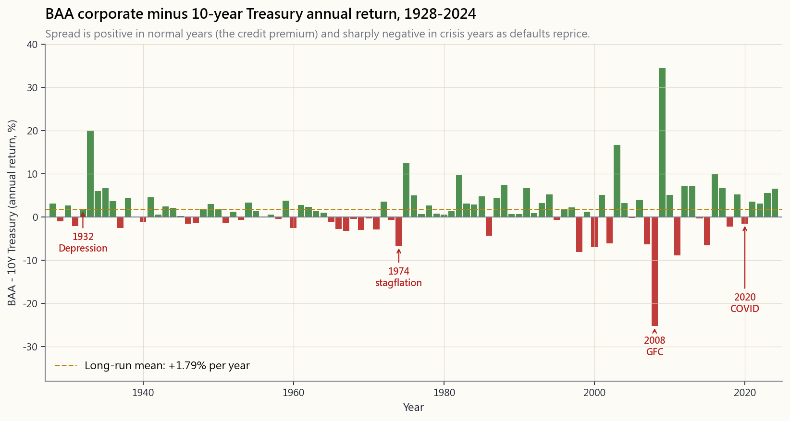
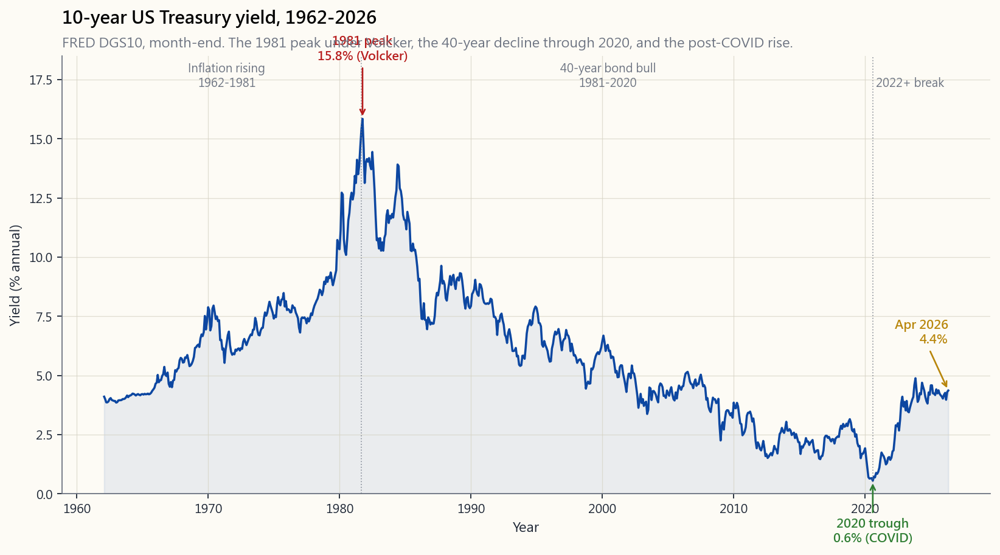
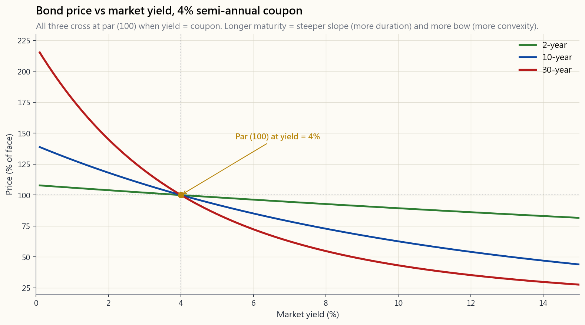

Week 5: Bonds — Coupons, Prices, and Yields
1. Why This Is Important
A bond is the simplest financial instrument in the world. You lend someone a known amount, on a known schedule, for a known interest payment (the coupon — that's the bond-market word for it, and we'll use it for the rest of the lesson), and they pay you back at a known date. Four numbers and a calendar. Stocks have nothing this clean.
And yet — this simplest instrument generated the largest single multi-decade trend in modern financial history (a forty-year bull market from 1981 to 2020 in falling yields), and then in 2022 delivered the worst calendar year for US Treasuries on record. Both moves were already inside the four-number contract. §2.2 shows the one equation that turns the contract into a price; the rest of the lesson is just consequences of that equation.
*(Side note: that same present-value equation — future cash flows discounted back to today — is also how stocks, real estate, and every other cash-flow asset are valued. It is the most important formula in the entire course. We meet it cleanly here in bonds because bonds have the cleanest cash flows; we apply it to stocks in Week 21.)*
You need to understand bonds for five reasons.
cash flow on earth — your mortgage (which is literally a bond you issued to the bank), a stock's earnings stream, a private-equity exit, a pension liability — is priced by discounting at the risk-free Treasury curve **plus an asset-specific risk premium**. The Treasury curve is the base; the premium is what the market demands on top for the particular asset's risk. When the 10-year yield moves from 1.5% to 4.5%, the base moves under every long-duration asset on the planet, and they all reprice (the spread on top can move too, but the base move is what nobody can hide from). You cannot understand any other asset class without understanding what its discount rate is doing. Worth knowing that bonds are also historically prior: organised sovereign debt markets predate organised stock markets by centuries (Sidney Homer's A History of Interest Rates traces continuous bond markets back to 13th-century Venice and Genoa; the Amsterdam stock exchange was a 1602 latecomer, and through most of the 18th and 19th centuries equities had a worse reputation than bonds — closer to gambling than investing). The modern instinct that "stocks are the main asset class and bonds are a sleepy add-on" is a 20th-century artefact, not a permanent truth.
leaned on Treasuries for the diversification benefit. This week we open the bond box and ask: what are we actually holding, how does it pay, and how does its price form? After this lesson the 40 in 60/40 is no longer a black box.
what institutions actually trade.** Global bond market outstanding is roughly USD 130-140 trillion (BIS / SIFMA, 2024 estimates), against roughly USD 110 trillion in global equity market cap. US Treasuries alone are ~USD 27 trillion. Daily trading volume in US Treasuries runs ~USD 900 billion versus ~USD 500 billion across all US-listed stocks combined. Why does this matter to a retail equity investor? Because almost every form of leverage in the rest of the financial system is collateralised by Treasuries: bank reserves, repo (the overnight funding market that keeps brokers, hedge funds, and primary dealers running), futures-exchange margin, swap-dealer collateral, central-bank liquidity facilities. When Treasuries move, the cost and availability of leverage moves under every other asset. Stress in the Treasury market (e.g. March 2020, the September 2019 repo spike) is a stress signal for the whole system. Stocks are the visible tip; bonds are the plumbing underneath.
credit spread between BAA corporates and 10-year Treasuries, and the TIPS breakeven rate are three separate, daily-quoted, public forecasts of growth, default risk, and inflation. The bond market is the cheapest macro intelligence service on earth.
almost every "passive works" claim of the last two generations.** A generation of investors has never seen a real bond bear market — and 2022 was the first warning shot. This regime-shift framing is not original to this course: Howard Marks laid it out cleanly in his December 2022 Oaktree memo "Sea Change" (and again in the May 2023 follow-up), arguing that the four decades of falling rates from 1980 onward were a one-off tailwind for almost every asset and that we are now entering a higher-rate regime in which different strategies will work. Ray Dalio's *Principles for Dealing with the Changing World Order* (2021) makes the longer cycle argument; Lyn Alden's Broken Money (2023) makes the monetary-plumbing argument; Stanley Druckenmiller has been making the debt-and-deficit version of the same point in interviews since 2022. The point is that several serious investors with different lenses converged on the same call: the rate regime that made buy-and-hold look easy is over, or at minimum no longer the safe default. We will return to this throughout Levels 4 and 5.
2. What You Need to Know
2.1 The Bond Cash Flow — Four Numbers and a Calendar
Scope of this lesson. Everything below is about *plain-vanilla fixed-rate bonds* — the contract is locked at issue and never changes. Callable bonds, floating-rate notes, TIPS, mortgage-backed securities, convertibles, and structured credit all add extra moving parts (issuer optionality, rate-resetting coupons, inflation-indexed principal, prepayment risk, equity-linked payoffs, tranching). We touch TIPS in §2.5 and §Q4, and credit/structured products get full treatment in Weeks 31-34. For this week, fix the picture of a coupon plus a balloon.
A bond is fully specified by:
- Face value $F$ — the amount returned at maturity. Almost
- Coupon rate $c$ — the annual interest rate, fixed at issue.
- Years to maturity $N$ — when face is repaid.
- Payment frequency $m$ — how many coupon payments per year.
Each coupon is $C = F \cdot c / m$. So a 4% semi-annual coupon on $1,\!000 face pays $20 every six months for $N$ years, plus $1,\!000 at the end.
That's it. That's the contract. Everything else — price, yield, duration, convexity — is *math performed on those four numbers plus a discount rate*.
2.2 Price Is Just Discounted Cash Flow
If you require an annual return of $y$ (the market yield, or yield to maturity) on the bond's risk profile, then the price you should be willing to pay today is the present value of every cash flow:
$$ P = \sum_{t=1}^{m \cdot N} \frac{C}{(1 + y/m)^{t}} + \frac{F}{(1 + y/m)^{m \cdot N}} $$
That sum has a closed form:
$$ P = C \cdot \frac{1 - (1 + y/m)^{-mN}}{y/m} + \frac{F}{(1 + y/m)^{mN}} $$
But the formula matters less than the shape: a bond is one geometric series of coupons plus one balloon payment of face. Drop either piece and you have a different instrument (the geometric series alone is an annuity; the balloon alone is a zero-coupon bond).
Three immediate consequences:
- If $y = c$, then $P = F$. The bond trades at par.
- If $y > c$, the cash flows aren't generous enough to give the
- If $y < c$, the buyer is happy to pay more than face for the
The interactive panel later in this lesson lets you slide $c$, $y$, $N$, and $m$ live and watch $P$ recompute. Spend two minutes on it. Internalising the shape of the price-yield curve is worth more than memorising any formula.
2.3 Why Price and Yield Move Inversely
This is the single most asked-about feature of bonds, so be explicit. The cash flows are fixed at issue. Coupons are $C$ forever, face is $F$ forever. The only thing that changes day to day in the secondary market is the discount rate the market applies to those fixed cash flows. Higher discount rate -> lower present value -> lower price. Lower discount rate -> higher present value -> higher price.
The relationship is monotonic and convex. Monotonic: each $1 move in yield always moves price in the opposite direction. Convex: the price-yield curve bows toward the origin, which means **starting from the same yield, a 1% drop in yield raises price by more than a 1% rise of the same size lowers it**. (The two moves have to start from the same yield level and be the same absolute size; convexity is a local property of the curve, not a universal claim about any pair of yield moves.) That asymmetry is convexity, and for long bonds it is large. Watch it on the interactive: hold $c$, $N$ fixed, slide $y$ from 0% to 15% and see how the curve bends.
2.4 Duration — The "How Sensitive" Number
A 30-year bond and a 2-year bond do not respond equally to a 1% move in yield. Duration is the linear approximation of how much the price moves for a 1% yield change.
The Macaulay duration is the weighted average maturity of the cash flows, where each weight is the present value of that cash flow divided by the price:
$$ D_{\text{Mac}} = \frac{1}{P} \left[ \sum_{t=1}^{m N} \frac{(t/m) \cdot C}{(1 + y/m)^{t}} + \frac{N \cdot F}{(1 + y/m)^{m N}} \right] $$
The modified duration is the elasticity of price with respect to yield:
$$ D_{\text{mod}} = \frac{D_{\text{Mac}}}{1 + y/m} \quad \Rightarrow \quad \frac{\Delta P}{P} \approx -D_{\text{mod}} \cdot \Delta y $$
Rules of thumb worth memorising:
- 2-year Treasury: $D_{\text{mod}} \approx 1.9$. A 1% rate rise ->
- 10-year Treasury: $D_{\text{mod}} \approx 8.5$. A 1% rise ->
- 30-year Treasury: $D_{\text{mod}} \approx 19$. A 1% rise ->
In 2022, the 10-year yield rose from ~1.5% to ~3.9%, about 2.4%. Multiply by a duration of 8.5 and you get the realised -18% total return on the 10-year — almost exactly the loss we attributed to "bonds" in last week's 60/40 chart. The duration approximation is not a curiosity; it is the explanation. The deeper math (convexity adjustment, key-rate durations, OAS) waits for Week 32.
2.5 Yield to Maturity, Current Yield, and Coupon Rate
Three numbers that everyone confuses.
- Coupon rate: the contractual interest rate. Fixed at issue.
- Current yield: $C \cdot m / P$. What the coupon stream alone
- Yield to maturity (YTM): the single discount rate $y$ that
When a bond trades at par, all three are equal. When it trades at a discount, YTM > current yield > coupon rate (you get the coupon and a capital gain at maturity). When it trades at a premium, YTM < current yield < coupon rate.
Always compare bonds on YTM, not coupon. The coupon is a contract detail; the YTM is the return you actually earn only if you (a) hold to maturity and (b) reinvest every coupon at the same yield. Both conditions are usually violated. If you sell before maturity at a different yield, your realised return depends on where prices are that day — not on the YTM you bought at. If reinvestment rates fall (rise), your realised return ends up below (above) the original YTM. YTM is the bond's quoted internal rate of return; it is not a guaranteed realised return for a non-buy-and-hold investor.
Intuition check before you move on. A coupon is a number stamped on a contract — say "$40 a year forever until I pay back your $1,000" — and it never changes. A yield is the return a buyer demands today for taking on that contract. Those two numbers don't have to agree, because the price moves in between to make them agree. If demand is high, the price rises; the same $40-a-year stream now gives the buyer a lower percentage return on the higher purchase price; the yield drops. If demand collapses, the price falls; the same $40 now gives the buyer a higher percentage return; the yield rises. Coupon = contract; price = market; yield = the percentage return that falls out of the two. Open the interactive bond pricer below before you continue: hold the coupon at 4%, slide the market yield from 2% to 8%, and watch the price drop and the YTM climb. Two minutes on the slider is worth more than ten re-readings of this paragraph. This is the equation behind every asset valuation in the rest of the course — do not skip it.
2.6 Credit Ratings — and Why Not to Trust Them Blindly
Before we look at the spread between corporate bonds and Treasuries, you need to know what makes a corporate bond riskier in the first place — and how the market signals that.
When a company (or a country, or a city) issues a bond, third-party credit rating agencies assign it a letter grade from "basically as safe as Treasuries" down to "close to default." The big three are Moody's, S&P, and Fitch. Their scales differ slightly but map roughly to the same buckets:
| Bucket | S&P / Fitch | Moody's | Plain English |
|---|---|---|---|
| Investment grade — highest | AAA | Aaa | Treasury-like (US gov was AAA until 2011) |
| Investment grade — high | AA / A | Aa / A | Strong company, low default risk |
| Investment grade — lowest | BBB+ to BBB- | Baa1 to Baa3 | Adequate; "BBB" / "BAA" — the line we plot |
| Cutoff | --- | --- | Below this is no longer "investment grade" |
| Speculative / "junk" | BB+ down to CCC | Ba1 down to Caa | High yield; meaningful default risk |
| Default / near-default | CC, C, D | Ca, C | Restructuring or already missed a payment |
The "BAA" you'll see on the chart in §2.7 is just Moody's spelling for the lowest investment-grade rung — the same place S&P writes "BBB". It is the cleanest century-long corporate series, which is why we use it.
The rating system has a structural conflict of interest. The rating agencies are paid by the issuer of the bond, not by the buyer. The company that wants its debt to look safer goes shopping for a rating, and the agency that gives it the higher grade gets the contract. This is the financial equivalent of letting students hire and pay their own examiners — and then asking the examiners to certify how smart the students are. This isn't a thought experiment. The historical record is brutal:
- Enron carried investment-grade ratings until four days
- Lehman Brothers held an A-tier rating from all three
- The 2008 housing crisis is the canonical case: tens of
- Greek sovereign debt was investment-grade until late 2009;
What does this mean for a retail investor? **Treat ratings as a rough sort, not a verdict.** A AAA does not mean "safe"; it means "the issuer paid for that letter, and historically defaults in this bucket have been rare until they aren't." The market price and the daily yield spread (§2.7) tell you what *traders with their own money on the line* think — and they almost always move before the ratings do. A bond whose yield spread blows out to distressed levels while it still carries an investment-grade rating is the market telling you the rating is wrong; ignore the letter and read the spread.
2.7 Credit Spreads and the Realised Credit Premium
A US Treasury is the textbook default-free asset (it is as default-free as the dollar itself, which is a separate philosophical issue — see Week 31). Anything else is riskier. The market prices that extra risk by demanding a higher yield on the corporate bond than on the matched-maturity Treasury.
Two numbers, don't confuse them:
- Yield credit spread. A yield difference — for example
- Realised excess return. The return on corporate debt
The chart below shows the second one — annual realised excess return of BAA corporates over the 10-year Treasury, from 1928 through 2024 (Damodaran annual series, BAA being the lowest investment-grade rating). It is the cleanest century-long proxy for what a retail buy-and-hold investor would have experienced holding corporates instead of Treasuries.

Three reads:
investment-grade corporate debt has earned roughly 1-2% per year above Treasuries on average. That is the unconditional realised credit premium.
year (1932, 1974, 2008, 2020), corporates can underperform Treasuries by 10%-25% in a single year as default risk reprices (yield spreads blow out, corporate prices blow down) and Treasuries rally on the flight-to-safety bid.
live, not on this chart.* Daily/weekly OAS can* widen ahead of equity bottoms during a credit cycle. The annual realised excess-return chart above is too coarse to use as a leading indicator: it tells you a bad year happened, not that one is coming. For real-time monitoring, watch a daily yield-spread series (e.g. ICE BofA US Corporate OAS on FRED). The lesson from this chart is the long-run shape of the payoff, not timing.
For most retail investors the practical answer is: **the credit premium is real but small, and the tail risk is asymmetric**. Holding investment-grade corporate debt instead of Treasuries earns you maybe 1% extra in normal years and costs you 10%+ in the years that matter most. For diversification against equities, hold Treasuries. For yield-pickup income in retirement, a small allocation to investment-grade corporates is reasonable.
**Credit default swaps (CDS), capital structure, and the wider credit complex — short preview.** What we just covered is plain corporate debt — the borrower borrows, you lend, you collect. The wider credit complex includes a few more pieces you should at least recognise now and that we cover properly in Weeks 31-34:
- Capital structure (senior vs junior). A single company can
- Bonds vs bank loans vs private credit. A bond is
- Credit default swaps (CDS). A CDS is insurance on a bond.
2.8 The Forty-Year Bull Market and the 2022 Break
The chart below plots the 10-year US Treasury yield from 1962 through 2026, the longest clean monthly run we have on FRED's DGS10 series.

Three regimes you need to recognise.
- 1962-1981: yields rose. Inflation accelerated through the
- **1981-2020: yields fell, in a near-uninterrupted forty-year
- 2020-202?: yields rose again. The COVID liquidity flood, then
The regime-shift framing here is not original to this course. Howard Marks's December 2022 Oaktree memo "Sea Change" and the May 2023 follow-up "Sea Change II" lay out the argument that four decades of falling rates were a one-off tailwind under every asset class, and that the next decade will reward different behaviours. Ray Dalio's *Principles for Dealing with the Changing World Order* (2021) makes the longer cycle case; Lyn Alden's Broken Money (2023) makes the monetary-plumbing case; Stanley Druckenmiller has been hammering the debt-and-deficit version in interviews since 2022; David Rosenberg has the deflationist counter-argument. We are not picking a winner here — we are flagging that several serious investors with very different lenses converged on "the rate regime that made buy-and-hold look easy is over, or at minimum no longer the safe default." That passive index investing worked across 1981-2020 partly because bonds rallied and equity multiples expanded together as rates fell. The trigger that breaks the regime is **a sustained rise in long yields**, and we are watching that trigger fire right now in real time. It is too early to declare the regime over; it is too late to pretend nothing has changed.
2.9 TIPS, Floating-Rate Notes, and Bond Maturities You'll Meet
So far we have been looking at plain fixed-rate nominal bonds (face value and coupon both stated in dollars). The bond universe has a few common variants you'll bump into immediately as a retail investor; they all live on top of the same present-value equation, but with one or two pieces swapped out.
- TIPS (Treasury Inflation-Protected Securities). The
- Floating-rate notes (FRNs). The coupon resets periodically
- Common bond maturities. Treasuries come in T-bills (4, 8,
- Convertible bonds. A bond bundled with an embedded equity
- Callable bonds. The issuer reserves the right to redeem the
2.10 The Debt Wall and the Refinancing Cycle
A bond is finite — every bond has a maturity date when the issuer has to hand back the principal. For an issuer with a steady stream of debt outstanding (every government, every large company, every mortgage holder), bonds are constantly maturing and have to be refinanced: the issuer comes back to market and sells new bonds to raise the cash to pay off the old ones. This recurring obligation is the refinancing cycle.
When you stack the maturities of all the bonds an issuer has outstanding by year, you get a wall — a year in which a large lump of debt is coming due all at once. Two examples to make this concrete:
- The US Treasury debt wall. Roughly USD 7-9 trillion of US
- The corporate "maturity wall." Roughly USD 1.8-2 trillion
The refinancing cycle is why "yields are higher than they used to be" is not a temporary bookkeeping fact — every year that passes, more of an issuer's old cheap debt rolls into new expensive debt, and the average coupon paid grinds higher toward the prevailing rate. For sovereigns this is the slow path to fiscal pressure; for corporates it is the slow path to credit repricing. Either way, it is bond plumbing — not a forecast, an accounting consequence — and worth watching.
2.11 How Retail Actually Buys Bonds (and Why ETFs Have Their Own Problem)
Almost no retail investor buys individual corporate bonds. Three reasons:
handful of times a week, not a day. Bid/ask spreads are often 50-200 bps — you pay 1-2% just to get in and out. By contrast Treasuries are the most liquid asset on earth (tight bid/ask, $900b daily volume), and those you can comfortably buy individually.
in $5,000 or $10,000 minimums; a diversified 50-name corporate portfolio needs a quarter-million dollars before you can even start.
bankrupt name and your whole bond sleeve takes a hit you can't diversify away with a small handful of issuers.
So retail typically holds a bond ETF (LQD, BND, AGG, HYG, etc.). That solves the three problems above but introduces one of its own that you should know about:
Most bond indices are weighted by amount of debt outstanding. Think about that. A market-cap-weighted stock index assigns the biggest weight to the company the market values most highly (Apple, Microsoft). A market-cap-weighted bond index assigns the biggest weight to the issuer that has borrowed the most. The most-indebted issuer is not necessarily the safest; it is literally the one with the most debt to repay. Aggregate bond ETFs end up overweight the US Treasury (which is fine — it is at least the borrower with printing-press authority) but also overweight the most-leveraged investment-grade corporates. This is structurally different from stock-index investing and is a reason "buy a corporate-bond ETF and forget it" is not as benign a default as "buy a stock-index ETF and forget it." If you want corporate exposure, look at equal-weighted or fundamentals-weighted bond ETFs, or accept the cap-weight bias deliberately.
This is also why a corporate-bond ETF in a credit blow-up does not behave like a Treasury ETF in a rate move: its top holdings are exactly the issuers most likely to be downgraded and repriced. The 2008 LQD drawdown (-15% peak-to-trough in late 2008) and the March 2020 HYG drawdown (-21% in three weeks) are the historical precedents.
3. Common Misconceptions
Misconception 1: "Treasuries are riskless."
Treasuries are credit-riskless in nominal dollars (the US government can print the dollars it owes). They are not price-riskless or purchasing-power-riskless. In 2022 the 10-year lost 18% of its price. In 1973-1981 it lost roughly 40% of its real value. "No default risk" is not the same as "no risk."
A sharper version: even sovereigns can and do default on their own-currency debt. Russia in August 1998 defaulted on its domestic ruble-denominated GKO bonds because, although it could have printed rubles to pay, the cost (collapsing the FX peg, hyperinflation, banking-system implosion) was judged worse than the default. Argentina has serially defaulted on peso-denominated debt; Mexico's 1982 "tequila" crisis included a forced restructuring of dollar and peso obligations. "Print to pay" is a political choice, not a mathematical guarantee. The US specifically has its **AAA stripped three times**: S&P in August 2011 (debt-ceiling brinksmanship), Fitch in August 2023 ("erosion of governance"), Moody's in May 2025 (rising debt burden and persistent fiscal deficits). Treasuries are still the deepest, most-liquid sovereign bond on earth and still the global reserve collateral asset — but "riskless" was a 20th-century shorthand that no longer survives literal inspection. Default by inflation is the more realistic scenario for any sovereign with debt in its own currency: pay back the nominal dollars, just dollars worth less.
Misconception 2: "If I hold to maturity, I can't lose."
In nominal terms, yes — you get face plus coupons back. But the real value of those payments depends on inflation between purchase and maturity. A 30-year bond bought at 2% in 2020 is contractually locked in to deliver a real loss if inflation averages 3% over the holding period. Holding to maturity protects you from price volatility, not from inflation. (We come back to where the price volatility comes from — duration and yield-curve moves — properly in Week 31 on the yield curve and Week 32 on duration & convexity. For Level 1 the rule of thumb in §2.4 is enough: longer maturity = more price swing per 1% yield move.)
**Misconception 3: "Bond funds just hold bonds — they should behave the same as holding the bonds directly."**
A bond fund maintains a roughly constant duration by selling old bonds and buying new ones. An individual bond's duration *falls mechanically* as it approaches maturity. So a fund that targets 20-year duration is, in a rising-rate environment, the structurally worst possible thing to hold — exactly what TLT investors learned in
matched to that date; a fund is not equivalent.
Misconception 4: "Higher coupon means higher yield."
The coupon is the contract; the yield is the market price. A 10% coupon bond can have a 3% yield (it's trading at a huge premium) and a 1% coupon bond can have a 6% yield (it's at a deep discount). Always compare on YTM, not coupon.
**Misconception 5: "Credit spreads are just extra yield — free income."**
The historical credit premium is 1%-2% in the average year and -10%-or-worse in the years that matter (1932, 1974, 2008, 2020). When you buy a corporate bond instead of a Treasury, you are not just collecting "a bit of extra yield" — you are *taking on the risk that the company defaults*, and the extra yield (the credit spread) is the market's price for that risk. Functionally, that makes the corporate-bond holder the seller of default insurance to the company: the company pays you the extra yield each year (the "insurance premium"), and in exchange, if the company goes bust, you eat some of the loss (the "insurance payout"). It is the same risk pattern an insurance company sees on a fire policy: lots of small premiums collected, and once in a while a house burns down and they pay out a big claim.
That shape of payoff — small wins most of the time, occasional large losses — is what "negatively skewed" means in plain language. Picture the distribution of annual returns: it has a short fat right side ("normal year, +1.5% extra") and a long thin left tail ("crisis year, -15%"). The average return is positive, but most of the bad-year losses are bigger than any single good-year gain. So selling credit insurance is not free yield; it is paid risk-taking, and the years where it costs you are exactly the years your equity sleeve is also down. That's why the diversification job in 60/40 belongs to Treasuries, not corporates.
**Misconception 6: "Long bonds have higher yields, so they're better."**
Longer maturity earns the term premium — but with much higher duration risk. The Sharpe ratio of long Treasuries is comparable to or worse than that of intermediate Treasuries over most historical windows. Reach for the term premium only if you have a specific liability that matches that maturity, or you are explicitly making a duration bet (deliberately overweighting long bonds because you think yields will fall, which would push long-bond prices up sharply via their high duration; the inverse bet is to avoid long bonds because you think yields are heading higher — the 2020 "buy TLT" investor discovered the wrong side of this in 2022). And note: "just roll short bonds into long bonds" sounds free but isn't. When the yield curve is inverted (short yields > long yields), as it was for most of 2022-2024, rolling short into long actually gives up yield. We cover the curve shape and the term-premium story properly in Week 31.
**Misconception 7: "Inflation-protected bonds (TIPS) are always better than nominal bonds."**
TIPS are better when inflation surprises upward relative to the breakeven rate priced into them. They are worse when inflation surprises downward, or when the breakeven is expensive. TIPS are a relative trade against nominal Treasuries, not a free upgrade. Two extra points worth absorbing: (i) TIPS index to official CPI — so they protect against the CPI methodology used by the BLS, not necessarily against the actual cost-of-living change you feel (recall the Week 1 ShadowStats discussion); (ii) when CPI prints high and the Fed responds by hiking rates, TIPS take duration losses that partially or fully offset the inflation-accrual gains — TIPS lost money in 2022 even though inflation was at multi-decade highs, because the rate-hike response drove their real yields up sharply. (§2.9 covers the mechanics; §Q4 walks the breakeven calculation.)
**Misconception 8: "Negative-yield bonds make no sense and no one should buy them."**
European and Japanese institutional investors held trillions of dollars in negative-yielding bonds during 2014-2021. Some of that demand was voluntary (price upside if rates went more negative; FX-hedged carry that was positive once you hedged dollars back to euros), but a meaningful chunk was effectively forced: bank, insurance, and pension regulation in the EU (Solvency II for insurers, Basel III LCR for banks) requires institutions to hold a minimum amount of high-quality liquid assets — which in practice means sovereign bonds — regardless of the yield, and liability-matching pension funds discounting at long real rates are obliged to hold matched-duration bonds even at negative yields. So "it makes no sense for me as a retail investor" is correct (you can just hold cash); "it makes no sense for anyone" is wrong. Notice the asymmetry: regulated institutions can be compelled into a trade you can walk away from — one of the structural retail advantages we'll come back to in later levels.
4. Q&A Section
Q1: I want monthly income from bonds. What's the cleanest way?
A: Build a bond ladder — buy individual Treasuries or TIPS maturing in each of the next 5-10 years, equal-weighted. Each year one rung matures and you reinvest at the then-current yield. Cash flow is roughly the average yield × portfolio value. Avoids fund duration drift and gives you a predictable schedule. The brokerage tools at Fidelity, Schwab, and Vanguard let you click through the mechanics in 15 minutes — but before you place orders, check each line: bid/ask spread (corporates can be wide; Treasuries are tight), callable status (a callable bond is not a true ladder rung — the issuer can take it back early), the exact maturity date (line up with when you actually need the cash), tax treatment (Treasury interest is state-tax-exempt; munis are federal-tax-exempt; corporates are fully taxable), and minimum lot size (some bonds trade in $5,000 or $10,000 minimums that won't fit a small ladder evenly).
Q2: Should I buy individual bonds or bond ETFs?
A: Treat Treasuries and corporates differently.
- Treasuries. Modern brokers (Fidelity, Schwab, Vanguard,
- Corporates. Individual corporate bonds have wide bid/ask
- Bond funds in general. ETFs (BND, AGG, IEF, TLT, SHY) buy
Q3: What's the right bond duration for me?
A: Roughly match your investment horizon. 1-3 year Treasuries (SHY) for money you need within five years. Intermediate (IEF, ~7 yr) for the diversifier sleeve in a 60/40-style portfolio. Long bonds (TLT, ~20 yr) only as a deliberate duration bet — buying long bonds because you expect yields to fall and want the high-duration price gain that produces, not as a sleepy default. The 2022 lesson: duration is a loaded dimension; don't accidentally take more than you intended.
Q4: How is a TIPS different from a regular Treasury?
A: A TIPS' principal adjusts upward with CPI. The coupon rate is fixed but applies to the inflation-adjusted principal, so dollar coupons grow with inflation too. The "real yield" you see quoted on TIPS is the yield above CPI. The breakeven inflation rate is the difference between the nominal Treasury yield and the TIPS real yield at the same maturity — if realised CPI over the holding period exceeds breakeven, TIPS win; if it falls short, nominals win. (April 2026: 10-year nominal ~4.2%, 10-year TIPS real ~1.8%, so 10-year breakeven ~2.4%. TIPS win the next decade if average official CPI is above 2.4%.)
Three honest caveats. First, the CPI those bonds index to is the same official BLS series we picked apart in Week 1 — hedonic adjustments, geometric-mean weighting, owner-equivalent rent — so TIPS protect against the measured number, not necessarily your grocery bill. Second, when CPI rises and the Fed hikes rates in response, TIPS take duration losses that partially offset the inflation-accrual gains, which is exactly why TIPS lost money in 2022 even with inflation at multi-decade highs. Third, historically the breakeven has been a **roughly unbiased but noisy** forecast of subsequent CPI: it tracks the long-run direction but routinely misses by 1-2 percentage points, and during liquidity stress (Q4 2008, March 2020) the breakeven temporarily collapses to absurd levels because TIPS are far thinner than nominals. Treat the breakeven as the market's *best central estimate*, not as a precise forecast.
Q5: Why did the long bond fall 30% in 2022 when "bonds are safe"?
A: Long-bond duration is roughly 19. Yields went from ~1.5% to ~4%. Multiply: 19 × 2.5% ≈ 47% expected price drop, partially offset by coupon income, netting to the realised -30% range. "Bonds are safe" is shorthand for "low credit risk", not "low price volatility." Long bonds have equity-like price volatility when rates move sharply.
Q6: What's the yield curve and why do people obsess over it?
A: The yield curve is yields plotted against maturity (3-month, 1-year, 5-year, 10-year, 30-year). Normally upward-sloping (longer = higher yield). When the 2-year exceeds the 10-year — the inverted curve — it has historically been one of the most reliable recession leading indicators, with a 12-24 month lead. The inversion warning fired before each of the 1990, 2001, 2008, and 2020 recessions; it also pre-dates the early-1980s Volcker recessions. The most famous recent precedent is the inverted curve from mid-2006 through mid-2007, with the recession landing late-2007.
As of April 2026 (this paragraph will age), the curve has just un-inverted after a record-long inversion that began in mid-
un-inversion, not during the inversion itself, so "the curve is back to normal" is not an all-clear. Whether the post-inversion recession is off the table or merely delayed is the live debate; by the time you read this, the answer may already be in.
This is genuinely the most-traded "signal" in fixed income, and Level 1 only scratches the surface. Week 31 does the full yield-curve lesson — level / slope / curvature, what each shape is telling you, why segments of the curve trade differently, and how to read the curve in real time. For now: know the shape, know that an inversion is the warning, and use the Week 10 economic-cycles dashboard for the live read.
Q7: What is "convexity" in one sentence?
A: The bend in the price-yield curve — the higher-order term that makes price gains from falling rates larger than price losses from the same-size rising rates. Long bonds and zero-coupon bonds have the most convexity. It's a free option that gets paid for via slightly lower yield. Week 32 unpacks it formally.
Q8: Are corporate bonds a substitute for Treasuries in 60/40?
A: No. Corporate bonds have meaningful equity-correlation in crises (the realised-excess-return chart in §2.7 makes this concrete) and so they don't deliver the negative correlation that Treasuries give you in a flight-to-safety event. If you want yield, take it on the equity side; keep the bond sleeve in Treasuries for the diversification job.
Q9: How much of my portfolio should be bonds?
A: Outside of the 60/40 baseline (Week 4), the barbell shape holds less bonds than 60/40, more in cash + short Treasuries on the safe side, and more in equity tail bets on the asymmetric side. A 30-year-old building wealth probably runs 20-30% in short Treasuries; a 65-year-old in distribution probably runs 40-50%. The exact number is less important than understanding what role bonds play (price stability + recession hedge) and sizing accordingly.
Q10: What about high-yield ("junk") bonds?
A: High yield is a third asset class. Correlated more to equities than to Treasuries (about 0.7 to S&P 500). Sharpe ratio over the full cycle is mediocre. Default rates spike in recessions. A small allocation can be defensible for income-focused retirees but it should never replace your Treasury sleeve — it doesn't do the diversification job that Treasuries do.
Q11: Where does this lesson connect to the rest of the course?
A: Week 4 used Treasuries as a black box; this week opens the box. Week 15 (multi-asset / four-tranche / the barbell shape) chooses short Treasuries over long for the safe sleeve based on §2.4 — you take the rate-cut diversification benefit without absorbing 20-year duration shocks like 2022. Week 18 covers Fed-vs-market interest rates and how they cascade into asset prices. Week 31 is the full yield-curve lesson (level, slope, curvature, inversion mechanics in detail). Week 32 is the rigorous duration and convexity math (key-rate durations, convexity adjustment, OAS). Week 33 is the credit lesson (rating mechanics, IG vs HY, structured-credit tranching, CDS). Week 34 is rate-sensitivity across asset classes (the 2022 case study end-to-end). Week 47 and 50 cover long-volatility / managed-futures overlays that hedge the inflation tail that bonds can't.
The interactive panel below lets you slide the four-number bond contract (face, coupon, maturity, payment frequency) and the market yield, and watch the price recompute live. The chart shows the price-yield curve from 0% to 15% with your current point marked. Watch the curvature change as you increase maturity — the 30-year line is dramatically more convex than the 2-year. Macaulay and modified duration are reported below the chart.
*If you are reading this on a device or in a context where the interactive panel can't render, the static chart below shows the same relationship for representative 2-year, 10-year, and 30-year bonds at a 4% coupon — longer maturity is a steeper, more bowed curve, which is duration and convexity made visible.*

第五週：債券——票息、價格與收益率
1. 為何本課重要
債券是世界上最簡單的金融工具。你以已知金額、按已知時間表，向對方提供貸款，換取已知的利息支付（即票息——這是債券市場的專用術語，本課其餘部分將沿用此稱謂），對方則於已知日期歸還本金。四個數字加一張日曆，就是全部。股票遠沒有這般清晰。
然而，正是這個最簡單的工具，催生了現代金融史上持續時間最長的單一趨勢（1981年至2020年長達四十年的收益率下行牛市），並在2022年締造了美國國債有記錄以來最慘烈的年度跌幅。這兩段走勢，早已蘊含在那份四個數字的合約之中。§2.2列出了將合約轉換為價格的唯一方程式；本課其餘內容，皆為該方程式的延伸推論。
（補充說明：同一條現值方程式——將未來現金流折現至今日——同樣適用於股票、房地產及所有其他現金流資產的估值。這是整個課程中最重要的公式。我們在債券課題中率先接觸它，正因為債券的現金流最為清晰；我們將在第二十一週把它應用於股票。）
你需要理解債券，原因有五。
2. 你需要掌握的知識
2.1 債券現金流——四個數字加一張日曆
本課範圍。 以下所有內容皆針對普通固定利率債券——合約條款於發行時鎖定，此後不變。可贖回債券、浮動利率票據、通脹保值債券、按揭抵押證券、可換股債券及結構性信貸，均有額外的活動部件（發行人的可選擇權、利率重設票息、通脹掛鈎本金、提前還款風險、與股票掛鈎的回報、分層結構）。我們在§2.5及第四問題接觸通脹保值債券，信貸及結構性產品將在第三十一至三十四週全面講解。本週，請先在腦海中固定票息加氣球式還款的圖像。
一份債券由以下要素完整界定：
- 面值 $F$ — 到期時歸還的金額。在美國市場幾乎恆為1,000美元，慣例以100報價。
- 票息率 $c$ — 發行時固定的年利率。面值1,000美元、票息率4%的債券，每年支付40美元。
- 到期年期 $N$ — 歸還面值的時間。
- 付款頻率 $m$ — 每年派發票息的次數。美國國債及公司債：$m = 2$（半年付）。許多國際債券：$m = 1$（年付）。部分市政債券：$m = 4$。
僅此而已。這就是合約的全部。其餘一切——價格、收益率、存續期、凸性——皆是以那四個數字加上折現率進行的數學計算。
2.2 價格就是現金流折現
若你要求某債券風險概況的年回報率為 $y$（即市場收益率或到期收益率），則你今日願意支付的價格，應等於每筆現金流的現值之和：
$$ P = \sum_{t=1}^{m \cdot N} \frac{C}{(1 + y/m)^{t}} + \frac{F}{(1 + y/m)^{m \cdot N}} $$
該求和有封閉形式：
$$ P = C \cdot \frac{1 - (1 + y/m)^{-mN}}{y/m} + \frac{F}{(1 + y/m)^{mN}} $$
但公式本身的重要性，不及其形狀：一份債券是一個等比數列的票息，加上一筆面值的氣球式支付。拆去任何一部分，便是另一種工具（單有等比數列是年金；單有氣球式支付是零息債券）。
三個即時推論：
- 若 $y = c$，則 $P = F$。債券以面值交易，即平價。
- 若 $y > c$，現金流不足以在面值水平給予買方所要求的回報。價格必須下跌。債券以折價交易。
- 若 $y < c$，買方樂於為慷慨的票息支付高於面值的價格。債券以溢價交易。
2.3 為何價格與收益率反向移動
這是債券中被問得最多的特性，因此需要明確說明。現金流在發行時已固定。票息永遠是 $C$，面值永遠是 $F$。在二級市場中，每天變化的唯一變數，是市場對那些固定現金流所應用的折現率。折現率越高 -> 現值越低 -> 價格越低。折現率越低 -> 現值越高 -> 價格越高。
這種關係是單調且呈凸性的。單調是指：收益率每移動1元，價格必然反向移動。凸性是指：價格-收益率曲線向原點彎曲，意味著從相同收益率出發，收益率下跌1%對價格的提升，大於相同幅度的收益率上升對價格的拖累。（兩次移動必須從相同的收益率水平出發，且幅度相同；凸性是曲線的局部屬性，並非關於任意兩次收益率移動的普遍論斷。）這種不對稱性就是凸性，對長期債券而言尤為顯著。請在互動工具上觀察：固定 $c$、$N$，將 $y$ 從0%滑動至15%，看曲線如何彎曲。
2.4 存續期——「敏感度」數字
三十年期債券與兩年期債券，對收益率1%的變動反應並不相同。存續期是收益率變動1%時，價格移動幅度的線性近似值。
麥考利存續期是現金流的加權平均到期時間，其中每筆現金流的權重為該現金流的現值除以價格：
$$ D_{\text{Mac}} = \frac{1}{P} \left[ \sum_{t=1}^{m N} \frac{(t/m) \cdot C}{(1 + y/m)^{t}} + \frac{N \cdot F}{(1 + y/m)^{m N}} \right] $$
修正存續期是價格對收益率的彈性：
$$ D_{\text{mod}} = \frac{D_{\text{Mac}}}{1 + y/m} \quad \Rightarrow \quad \frac{\Delta P}{P} \approx -D_{\text{mod}} \cdot \Delta y $$
值得記憶的經驗法則：
- 兩年期國債：$D_{\text{mod}} \approx 1.9$。利率上升1% -> 價格約跌1.9%。
- 十年期國債：$D_{\text{mod}} \approx 8.5$。上升1% -> 約跌8.5%。
- 三十年期國債：$D_{\text{mod}} \approx 19$。上升1% -> 約跌19%。
2.5 到期收益率、當期收益率與票息率
三個人人混淆的數字。
- 票息率：合約規定的利率。發行時固定，永不改變。用於計算美元票息金額。
- 當期收益率：$C \cdot m / P$。僅計算票息流所支付的回報，忽略本金的趨平價拉動。對以收入為導向的買方有一定參考價值，但作為回報衡量指標並不完整。
- 到期收益率（YTM）：使所有現金流（票息加面值）的現值等於當日價格的單一折現率 $y$，即債券的內部回報率。這是隨處可見的官方報價收益率。
比較債券時，請務必以到期收益率為準，而非票息。票息是合約細節；到期收益率是你實際獲得的回報——前提是你（甲）持有至到期，且（乙）以相同收益率再投資每筆票息。這兩個條件通常均不成立。若你在到期前以不同收益率出售，你的實現回報取決於當日的價格水平——而非你買入時的到期收益率。若再投資利率下跌（上升），你的實現回報將低於（高於）原始到期收益率。到期收益率是債券報價的內部回報率；對於非買入持有的投資者而言，它並非有保證的實現回報。
繼續前進前的直覺驗證。 票息是印在合約上的一個數字——例如「每年支付40美元，直至我歸還你1,000美元」——它永不改變。而收益率是買方今日持有該合約所要求的回報。這兩個數字無需一致，因為價格在其間移動，令兩者趨於一致。若需求旺盛，價格上升；同樣的每年40美元流，現在給買方帶來的回報率，相對於更高的購入價格而言更低；收益率下跌。若需求崩潰，價格下跌；同樣的40美元現在給買方帶來更高的回報率；收益率上升。票息 = 合約；價格 = 市場；收益率 = 從兩者衍生出的百分比回報。在繼續閱讀之前，請打開下方的互動債券計算器：將票息固定在4%，將市場收益率從2%滑動至8%，觀察價格下跌、到期收益率攀升。兩分鐘的滑動體驗，勝過重讀本段十遍。這是本課程其餘所有資產估值背後的方程式——切勿跳過。
2.6 信用評級——以及為何不可盲目輕信
在審視企業債與國債之間的利差之前，你需要先了解是什麼使企業債更具風險——以及市場如何發出信號。
當一家公司（或一個國家、或一座城市）發行債券時，第三方信用評級機構會根據「基本與國債同等安全」到「接近違約」的評級體系，為其賦予字母評級。三大評級機構為穆迪、標準普爾及惠譽。其評級體系略有差異，但大致對應相同的級別：
| 級別 | 標準普爾/惠譽 | 穆迪 | 通俗說明 |
|---|---|---|---|
| 投資級——最高 | AAA | Aaa | 類國債（美國政府評級直至2011年均為AAA） |
| 投資級——高 | AA / A | Aa / A | 實力雄厚，違約風險低 |
| 投資級——最低 | BBB+ 至 BBB- | Baa1 至 Baa3 | 尚可；「BBB」/「BAA」——我們所繪製的分界線 |
| 分界線 | --- | --- | 此線以下不再屬於「投資級」 |
| 投機級/「垃圾」 | BB+ 至 CCC | Ba1 至 Caa | 高收益；存在實質違約風險 |
| 違約/瀕臨違約 | CC, C, D | Ca, C | 重組或已錯過付款 |
§2.7圖表中的「BAA」，不過是穆迪對投資級最低一檔的拼法——與標準普爾的「BBB」是同一位置。由於這是最完整的百年企業債序列，我們因此採用它。
評級體系存在結構性利益衝突。 評級機構的費用由債券的發行人支付，而非由買方支付。希望自己債務看起來更安全的公司，四處尋覓評級，出價最高的機構便獲得合約。這在金融層面等同於讓學生自行聘用並支付考官，然後要求考官為學生的成績蓋章認證。這並非思想實驗，歷史記錄殘酷地印證了這一點：
- 安然在申請美國當時規模最大的破產（2001年12月）前四天，仍持有投資級評級。
- 雷曼兄弟在2008年9月倒閉當日早上，三家機構均給予其A級評級。
- 2008年房屋危機是最典型案例：數以萬計的次級按揭抵押證券被標記為AAA——與美國國債同等評級——其中大量最終損失60%至100%的價值。美國參議院常設調查小組委員會（勒文-科本報告，2011年）記錄了評級機構在分析師反對的情況下，為保住發行人費用而對交易蓋章認可的情形。
- 希臘主權債務直至2009年底仍屬投資級；評級遭下調後數月之內，其交易價格已跌至面值的三折。
2.7 信用利差與已實現信用溢價
美國國債是教科書上的無違約風險資產（它與美元本身同等無違約風險，這是另一個哲學問題——詳見第三十一週）。其他任何資產均具有更高風險。市場通過要求企業債提供高於相同期限國債的收益率，來為這種額外風險定價。
兩個數字，切勿混淆：
- 收益率信用利差。 收益率差值——例如穆迪BAA級企業債收益率減去十年期國債收益率，或投資級指數的期權調整利差。每日以基點即時報價。當違約風險重新定價時，利差向上擴大（2008年12月期權調整利差達約600個基點；2020年3月達約400個基點；平靜市況下約為100至150個基點）。這是交易員所說「利差爆出」時的那個數字。
- 已實現超額回報。 同一持有期內，企業債的回報減去國債的回報（例如按年計算）。它同時涵蓋你從起始收益率利差所賺取的部分，以及當年任何利差變動帶來的價格影響。在利差爆出的年份，這個數字會急劇轉為負值——企業債價格的跌幅遠超國債價格跌幅。
三點解讀：
對大多數散戶投資者而言，實際結論是：信用溢價真實存在，但幅度不大，且尾部風險不對稱。持有投資級企業債而非國債，在正常年份可能為你多賺約1%，卻在最關鍵的年份令你損失10%以上。若要分散對抗股票的風險，請持有國債。若退休後希望獲取較高的收益，小幅配置投資級企業債是合理的選擇。
信用違約掉期、資本結構及更廣泛的信貸市場——簡要預覽。 我們剛才介紹的是普通公司債——借款人借款，你放貸，你收取款項。更廣泛的信貸市場還包括幾個你至少應有所認識的部分，我們將在第三十一至三十四週作全面介紹：
- 資本結構（優先級與次級）。 同一家公司可發行數層債務。優先（或「有抵押」）債務在破產時對資產擁有優先索償權，收益率最低；次級/附屬債務只在優先債務獲償後方可受償，並以更高收益率作為補償。其下是優先股，再下是普通股。每一層都是一份不同的債券，在出現問題時具有不同的回收率。CMO（抵押擔保債券）及CDO（債務抵押債券）等結構性產品，將同一底層貸款池切割為具有相同層疊結構的分層——AAA分層最後承受虧損，股權分層最先承受。2008年的崩盤，很大程度上源於對這些分層的錯誤評級。（第三十三週。）
- 債券vs銀行貸款vs私募信貸。 債券是公開發行的，在二級市場交易，受信託契約約束，並有評級。銀行貸款（「槓桿貸款」）是私下協商的協議，通常為優先有抵押、浮動利率，由銀行或貸款基金持有——可以交易，但流動性較低。私募信貸/直接借貸是由基金直接向企業提供的非銀行貸款，通常沒有評級且持有至到期。經濟本質相同（有人借款，有人放貸），三種模式在流動性、披露及定價制度上各不相同。
- 信用違約掉期。 信用違約掉期是債券的保險。買方支付年度保費（以基點計的信用違約掉期利差）；若標的債券發生違約，賣方作出賠付。信用違約掉期利差是對特定發行人違約風險最清晰的市場定價視角。主權信用違約掉期市場尤其往往比評級機構更早行動——希臘五年期信用違約掉期在官方評級仍屬投資級時，已連續數月發出困境信號。（第三十三週涵蓋具體機制；此處散戶的實際啟示是：即便幾乎沒有散戶投資者交易信用違約掉期，你也可以讀取其利差作為免費的宏觀信號。）
2.8 四十年牛市與2022年的轉折
以下圖表呈現1962年至2026年美國10年期國債收益率的走勢，是我們從FRED DGS10系列中所能取得最長的完整月度數據。
三個你必須認識的市場環境。
- 1962-1981年：收益率上升。 通脹在越戰、布雷頓森林體系崩潰及兩次石油危機中持續加速。這段時期債券回報以名義計算已相當差，以實際計算則一塌糊塗——是20世紀持續時間最長的熊市。持有「安全」長期國債的投資者在長達二十年間持續損失實際財富。
- 1981-2020年：收益率下跌，走出近乎不間斷的四十年趨勢。 沃爾克1981年的利率峰值打破了通脹預期，此後每一次衝擊——1987年、1990年、2000年、2008年、2020年——最終利率的落腳點均低於前一次。債券在這段時期提供了約7%的名義年化回報，創下有史以來最佳的四十年表現。
- 2020年至今：收益率再度上升。 新冠疫情引發的流動性氾濫，繼而是2022年的通脹衝擊，終結了四十年的趨勢。10年期收益率在30個月內從0.5%攀升至5%。截至2026年4月，收益率曲線接近4.2%，市場正在爭論我們究竟是身處1980年代式的正常化，還是長期結構性上行的開端。支持更高底部的論點：美國聯邦債務目前約佔本地生產總值的120%，和平時期赤字約佔本地生產總值的6-7%，而財政部每年必須以當時的市場利率為數以萬億計到期的債務續期（即「債務牆」；§2.10）。當新債供應龐大且持續增加，邊際買家要求更高的收益率才願意吸納——財政部無法主宰利率，只能設定票息，讓拍賣結果告訴它真實的收益率。再加上三次主權信用降級（標普於2011年8月將美國AAA降至AA+；惠譽於2023年8月跟進；穆迪於2025年5月降級），「收益率只會從此下跌」這一假設便不再安全。
2.9 通脹保值債券、浮息票據及常見債券年期
到目前為止，我們一直研究的是普通固定利率名義債券（面值及票息均以美元列明）。債券市場有幾種常見的變體，零售投資者會立即遇到；它們都建立在相同的現值方程式之上，只是替換了其中一兩個組成部分。
- 通脹保值債券（TIPS）。 本金與消費物價指數（CPI）掛鈎。票息率固定，但以經通脹調整後的本金計算，故美元票息亦隨CPI增長。TIPS所報的收益率是實際收益率（CPI以上）。你的賭注是實際通脹將超過盈虧平衡通脹率 = 名義國債收益率 − TIPS實際收益率。（2026年4月：約4.2% − 約1.8% ≈ 10年期2.4%。）注意事項：（a）這些債券掛鈎的CPI是官方美國勞工統計局CPI，我們在第一週已看到，該指數自1990年以來已多次進行方法論調整，且被廣泛認為低估了實際生活通脹——因此即使是「通脹保值」債券，保護的也是統計數字，未必是你實際的購物開支；（b）當CPI高企，美聯儲往往以加息回應，透過存續期壓低TIPS價格，而本金增值則推高TIPS——兩者效應部分抵銷，TIPS在加息式通脹衝擊中可能錄得虧損（2022年確實如此）；（c）加拿大於2022年11月以拍賣需求疲弱為由，終止發行實際回報債券，此決定此後持續受到退休基金批評——這提醒我們，即使是主權發行人也可能將通脹保護工具從選單上撤走。歷史上，TIPS盈虧平衡率對後續CPI的預測大致無偏，但雜訊很大：它能追蹤長期方向，但往往偏差1-2個百分點，而在流動性緊張時期（2008年第四季、2020年3月），由於TIPS的流動性遠遜於名義債券，盈虧平衡率會暫時崩至荒謬水平。
- 浮息票據（FRNs）。 票息定期重置至基準利率（SOFR加固定利差，或許多企業浮息票據採用的3個月SOFR加30-150個基點）。當基準利率變動，票息隨之調整，因此價格幾乎不變——存續期本質上是至下次重置的時間，對季度重置票據而言約為0.25年。浮息票據在預期利率上升時有用（可繼續享受更高票息而無需承受價格損失），在預期利率下跌時無用（放棄了鎖定更高固定收益率的機會）。與普通名義債券相比，你以再投資風險換取存續期風險。
- 常見債券年期。 美國國債分為短期國庫券（4、8、13、17、26、52週；零息，以低於面值的折讓價出售）、中期國庫票據（2、3、5、7、10年期）及長期國庫債券（20、30年期）。投資級公司債主要集中於5年、10年及30年期。永久債券（「永續債」）沒有到期日——發行人永久支付票息，並可在指定日期以面值贖回；英國18世紀發行的統一公債是典型案例（部分運作了逾250年，直至2015年才被贖回）。世紀債券（50至100年期）偶爾由主權國家及藍籌股公司發行——迪士尼於1993年發行了100年期債券，阿根廷於2017年發行了以美元計價的世紀主權債券（三年後便違約，從中可見一斑，足以說明在長存續期主權信用上追逐收益的代價）。
- 可換股債券。 債券附帶嵌入式股票認購期權——持有人可按固定股數將債券換成發行人的股票。由於股票期權本身有價值，可換股債券的收益率低於普通債券。可換股債券自成一個資產類別，有其以希臘字母定價的數學方法；我們在第25-30週涵蓋期權時，以及探討發行人資本結構操作時，會進一步觸及此議題。
- 可贖回債券。 發行人保留在指定價格提前贖回債券的權利。這是買方向發行人出售的空頭期權——當利率下跌，發行人以更低成本再融資並提前贖回舊債券，封頂了你的上行空間。因此，可贖回債券的收益率高於同等信用及年期的不可贖回債券。大多數美國國債是不可贖回的；公司債，尤其是市政債券，則往往設有可贖回條款——在構建梯式投資組合前，務必仔細閱讀債券契約。
2.10 債務牆與再融資週期
債券是有期限的——每張債券均有到期日，屆時發行人須歸還本金。對於有持續債務在外的發行人（每個政府、每家大型企業、每個按揭持有人）而言，債券不斷到期，必須再融資：發行人重返市場，出售新債券以籌集資金償還舊債券。這種週而復始的義務便是再融資週期。
將發行人所有在外債券按年份堆疊排列，便形成一道牆——某一年有大批債務集中到期。以下兩個例子有助具體說明：
- 美國財政部債務牆。 每年約有7至9萬億美元的美國國債到期，須以當時的市場收益率進行滾動。當財政部於2020年發行收益率0.7%的10年期票據時，該票據將於2030年到期，並以2030年的10年期收益率再融資。若屆時10年期收益率為4.5%，聯邦利息支出將機械性地永久增加——財政部無法「選擇」不滾動。截至2026年，美國聯邦利息支出已突破每年1萬億美元，超過整個國防預算。這就是再融資週期實時侵蝕財政空間的情況。
- 企業「到期牆」。 在2025-2027年的窗口期，美國投資級及高收益公司債合計約有1.8至2萬億美元到期——其中大部分是在2020-2021年零利率環境下以2-3%發行的。當時鎖定低廉長期債務的公司，如今正以5-7%再融資。對於利息覆蓋率本已偏低的高槓桿企業，再融資成本跳升300個基點，足以使狀況從尚算舒適變為陷入困境。若未來24-36個月出現一波高收益違約潮，其根源主要在於再融資週期，而非經濟衰退。
2.11 零售投資者如何實際購買債券（以及為何交易所買賣基金有其獨特問題）
幾乎沒有零售投資者會購買個別公司債。原因有三：
因此，零售投資者通常持有債券交易所買賣基金（LQD、BND、AGG、HYG等）。這解決了上述三個問題，但同時引入了一個你需要了解的新問題：
大多數債券指數按債務在外金額加權。 想想這意味著什麼。市值加權的股票指數，將最大權重分配給市場估值最高的公司（蘋果、微軟）。市值加權的債券指數，將最大權重分配給借債最多的發行人。借債最多的發行人未必是最安全的；他實際上就是欠債最多的一個。綜合債券交易所買賣基金最終超配美國財政部（這尚可接受——至少那是擁有印鈔權的借款人），但也超配了槓桿率最高的投資級公司。這與股票指數投資在結構上截然不同，也是「買入公司債交易所買賣基金然後置之不理」並不像「買入股票指數交易所買賣基金然後置之不理」那般良性的原因。若你想獲取公司信用敞口，可考慮等權重或基本面加權的債券交易所買賣基金，或者有意識地接受市值加權的偏差。
這也是為何公司債交易所買賣基金在信用衝擊中的表現，與國債交易所買賣基金在利率波動中的表現截然不同：前者的頭重倉位，恰恰是最可能遭降級和重新定價的發行人。2008年LQD的回撤（2008年底峰值至谷底下跌15%）及2020年3月HYG的回撤（三週內下跌21%），便是歷史先例。
3. 常見誤解
誤解一：「國債沒有風險。」
國債在名義美元層面是信用無風險的（美國政府可以印發它所欠的美元）。但它並非價格無風險，也非購買力無風險。2022年10年期國債價格下跌了18%。1973-1981年間，其實際價值損失了約40%。「沒有違約風險」並不等同於「沒有風險」。
更精確的說法是：即使是主權國家，也可以且確實對本幣債務違約。1998年8月，俄羅斯對其盧布計價的國內GKO債券違約，儘管技術上可以印發盧布償付，但這樣做的代價（外匯釘盤崩潰、惡性通脹、銀行體系崩潰）被判斷為比違約更糟。阿根廷曾多次對比索計價債務違約；1982年墨西哥「龍舌蘭酒」危機涉及對美元及比索債務的強制重組。「印鈔還款」是一個政治選擇，而非數學保證。美國已三度被剝奪AAA評級：標普於2011年8月（債務上限博弈）、惠譽於2023年8月（「治理侵蝕」）、穆迪於2025年5月（債務負擔上升及持續財政赤字）。美國國債仍是全球最深且流動性最高的主權債券，仍是全球儲備抵押資產——但「無風險」不過是20世紀的一種簡略說法，在字面意義上已無法通過嚴格審視。通脹式違約才是任何擁有本幣計價債務的主權國家更現實的情境：歸還名義上的美元，只是這些美元的購買力已大打折扣。
誤解二：「只要持有至到期，我就不會虧損。」
以名義計算，確實如此——你取回面值加上票息。但這些款項的實際價值，取決於購入至到期期間的通脹水平。2020年以2%買入的30年期債券，若通脹在持有期內平均達3%，則必然錄得實際虧損。持有至到期保護你免受價格波動影響，但無法保護你免受通脹侵蝕。（價格波動的來源——存續期及收益率曲線變動——將在第31週收益率曲線及第32週存續期與凸性中適當介紹。對於第一級而言，§2.4的經驗法則已足夠：年期越長 = 每1%收益率變動的價格波動越大。）
誤解三：「債券基金只是持有債券——應該與直接持有債券行為相同。」
債券基金透過出售舊債券、買入新債券，維持大致恆定的存續期。個別債券的存續期則會機械性地隨到期日臨近而縮短。因此，以20年存續期為目標的基金，在利率上升的環境中，是結構上最不利的持有品種——這正是TLT投資者於2022年所親身體驗的。若你有特定的負債日期，應持有與該日期匹配的個別債券；基金並非其等價替代品。
誤解四：「較高的票息意味著較高的收益率。」
票息是合約條款；收益率是市場定價。10%票息的債券可以有3%的收益率（以高溢價交易），而1%票息的債券可以有6%的收益率（以大折讓交易）。比較時應以到期收益率為準，而非票息。
誤解五：「信用利差只是額外收益——免費收入。」
信用溢價在平均年份約為1%-2%，而在關鍵年份則是-10%或更差（1932年、1974年、2008年、2020年）。當你買入公司債而非國債，你不只是在「收取一點額外收益」——你是在承擔公司違約的風險，而額外收益（信用利差）是市場對這種風險的定價。從功能上看，這使公司債持有人成為公司的違約保險賣方：公司每年向你支付額外收益（「保費」），而一旦公司破產，你承擔部分損失（「保險賠付」）。這與保險公司承保火險的風險模式相同：大量收取小額保費，偶爾一棟房子燒掉便要賠付一大筆。
這種收益形態——大多數時候小贏，偶爾大輸——正是「負偏態」的通俗含義。試想年度回報的分佈：右側短而厚（「正常年份，額外+1.5%」），左尾長而細（「危機年份，-15%」）。平均回報為正，但大多數的壞年份虧損均大於任何單一好年份的盈利。因此，出售信用保險並非免費收益，而是有償的風險承擔，而讓你付出代價的那些年份，恰恰也是你的股票倉位同樣下跌的年份。這正是60/40投資組合的分散投資職能屬於國債而非公司債的原因。
誤解六：「長期債券收益率更高，所以更好。」
較長年期確實賺取期限溢價——但存續期風險亦高得多。長期國債的夏普比率在大多數歷史時期與中期國債相當，甚或更差。僅在你有特定負債與該年期匹配，或你在明確進行存續期押注時（刻意超配長期債券，因為你認為收益率將下跌，從而透過高存續期大幅推高長期債券價格；反向押注則是迴避長期債券，因為你認為收益率走高——2020年「買入TLT」的投資者在2022年親歷了這一押注的反面），才追求期限溢價。另需注意：「不斷將短期債券滾入長期債券」聽起來毫無代價，實則不然。當收益率曲線倒掛（短期收益率高於長期收益率），如2022-2024年大部分時間的情況，將短期滾入長期實際上是在放棄收益率。我們將在第31週適當介紹曲線形態及期限溢價的完整論述。
誤解七：「通脹保值債券（TIPS）永遠優於名義債券。」
當通脹超出其定價盈虧平衡率時，TIPS優於名義債券。當通脹低於預期，或盈虧平衡率偏貴時，TIPS表現較差。TIPS是相對於名義國債的相對價值交易，而非免費升級。兩個額外要點值得記住：（i）TIPS掛鈎的是官方CPI——因此它保護的是美國勞工統計局所用的CPI方法，未必是你實際感受到的生活成本變化（回顧第一週的ShadowStats討論）；（ii）當CPI高企而美聯儲以加息回應時，TIPS因存續期而錄得價格損失，部分或全部抵銷通脹增值收益——2022年即使通脹處於數十年高位，TIPS仍錄得虧損，原因正是加息回應大幅推高了TIPS的實際收益率。（§2.9涵蓋機制詳情；§Q4逐步演示盈虧平衡計算。）
誤解八：「負收益率債券毫無道理，任何人都不應購買。」
2014-2021年間，歐洲和日本的機構投資者持有數萬億美元的負收益率債券。其中部分需求是自願的（若利率進一步走負則有價格上漲空間；對沖回歐元後的外匯對沖套息交易實為正數），但相當大一部分實際上是被迫的：歐盟的銀行、保險及退休金監管要求（保險公司的Solvency II、銀行的巴塞爾III流動性覆蓋率）規定機構必須持有最低數量的高質量流動資產——在實踐中意味著主權債券——無論收益率如何，而以長期實際利率折現的負債匹配型退休基金亦必須持有匹配存續期的債券，即使收益率為負。因此，「作為零售投資者，這對我而言毫無道理」是正確的（你完全可以持有現金）；「這對任何人都毫無道理」則是錯誤的。注意這種不對稱性：受監管的機構可能被迫使進行你可以毫無代價退出的交易——這是我們在後續關卡中將一再提及的結構性零售優勢之一。
4. 問答環節
Q1：我想從債券獲得每月收入，最簡潔的方式是什麼？
A：建立一個債券梯——購買未來5至10年內逐年到期的個別國債或抗通脹債券，等權重配置。每年有一級到期，你便以當時的收益率再投資。現金流大約等於平均收益率乘以投資組合價值。這樣可避免基金存續期漂移，並給你一個可預期的時間表。Fidelity、Schwab及Vanguard的經紀工具讓你在15分鐘內點擊完成整個操作——但在下盤前，逐行核查：買盤價與賣盤價之間的差價（公司債可以很寬；國債則偏窄）、可贖回狀態（可贖回債券不算真正的梯級——發行人可提前收回）、確切到期日（與你實際需要現金的時間對齊）、稅務處理（國債利息豁免州稅；市政債券豁免聯邦稅；公司債需全額繳稅），以及最低手數（部分債券以5,000或10,000美元為最低手數，未必能整齊地分配到小型債券梯中）。
Q2：我應該買個別債券還是債券交易所買賣基金？
A：對國債和公司債要區別對待。
- 國債。 現代經紀商（Fidelity、Schwab、Vanguard、Interactive Brokers，以及TreasuryDirect）讓個人投資者以低廉費用購買國庫券、票據及債券，流動性良好，即使賬戶規模較小亦然——差價緊，且無基金開支比率。對於買入持有的債券梯策略，無論賬戶規模大小，個別購入都相當合適。
- 公司債。 個別公司債的買盤價與賣盤價差價較寬，二級市場流動性薄，且存在明顯的單一發行人違約風險。對於幾乎任何規模的零售賬戶，交易所買賣基金（LQD投資級、HYG/JNK高收益）是更好的工具。
- 債券基金一般而言。 交易所買賣基金（BND、AGG、IEF、TLT、SHY）讓你即時獲得分散投資效果及固定存續期配置。代價是誤解三中提到的存續期漂移問題：基金永不到期，因此你無法以「持有至到期」的方式擺脫價格回撤。若有特定未來資金需求，請以個別國債與該日期配對。
A：大致與你的投資期限配對。五年內需要動用的資金，選1至3年期國債（SHY）。中期（IEF，約7年）用作60/40風格投資組合中的分散投資配置。長期債券（TLT，約20年）只作為刻意的存續期押注——購入長期債券是因為你預期收益率將下跌，希望獲得高存續期帶來的價格升幅，而非作為默認的惰性選擇。2022年的教訓是：存續期是一個高風險的維度；切勿不知不覺地承擔超出預期的敞口。
Q4：抗通脹債券與普通國債有何不同？
A：抗通脹債券的本金會隨消費物價指數向上調整。票息率固定，但以調整後的本金計算，因此美元票息也隨通脹增長。抗通脹債券報價所見的「實際收益率」，是高於消費物價指數的收益率。盈虧平衡通脹率是同一到期日的名義國債收益率與抗通脹債券實際收益率之差——若持有期間的實際消費物價指數超過盈虧平衡水平，抗通脹債券勝出；若低於盈虧平衡水平，則名義債券勝出。（2026年4月：10年期名義收益率約4.2%，10年期抗通脹債券實際收益率約1.8%，故10年期盈虧平衡通脹率約為2.4%。若未來十年平均官方消費物價指數高於2.4%，抗通脹債券將勝出。）
三點誠實的補充說明。第一，這些債券所參考的消費物價指數，是我們在第1週已剖析過的同一官方美國勞工統計局數據系列——對沖價格調整、幾何平均加權、業主等值租金——因此抗通脹債券保護的是量度所得的通脹，未必反映你的實際日常開銷。第二，當消費物價指數上升、聯儲局隨之加息時，抗通脹債券會承受存續期虧損，部分抵銷通脹累計收益，這正是為何2022年在通脹達到數十年高位的情況下，抗通脹債券仍然錄得虧損。第三，從歷史來看，盈虧平衡通脹率是對未來消費物價指數的大致無偏但嘈雜的預測：它能追蹤長期方向，但經常偏差1至2個百分點；在流動性緊張時期（2008年第四季、2020年3月），由於抗通脹債券市場遠比名義債券市場薄，盈虧平衡通脹率會暫時跌至荒謬水平。應將盈虧平衡通脹率視為市場的最佳中心估計，而非精準預測。
Q5：為何「債券安全」，長期債券在2022年卻跌了30%？
A：長期債券的存續期約為19。收益率從約1.5%升至約4%。計算一下：19 × 2.5% ≈ 47%的預期價格跌幅，部分被票息收入抵銷，最終實現約-30%的跌幅。「債券安全」是「信用風險低」的簡稱，而非「價格波動性低」。當利率急劇波動時，長期債券的價格波動性與股票相若。
Q6：收益率曲線是什麼？人們為何如此著迷？
A：收益率曲線是收益率對到期日（3個月、1年、5年、10年、30年）的圖形。正常情況下呈向上傾斜（期限越長收益率越高）。當2年期收益率超過10年期收益率——即倒掛曲線——歷史上這一直是最可靠的經濟衰退領先指標之一，領先期為12至24個月。這一倒掛警示在1990、2001、2008及2020年的每次經濟衰退前均曾出現；它亦早於1980年代初伏爾克時期的多次經濟衰退。最著名的近期先例，是2006年中至2007年中的倒掛曲線，隨後在2007年底出現經濟衰退。
截至2026年4月（此段內容會隨時間過時），收益率曲線在始於2022年中的創紀錄長期倒掛後，剛剛結束倒掛。歷史上，經濟衰退往往在倒掛結束後才到來，而非在倒掛期間，因此「曲線恢復正常」並非全面解除警報。倒掛後的經濟衰退是否已排除抑或只是推遲，目前仍是熱議話題；等你讀到這裡，答案或許已見分曉。
這是固定收益市場中交易最活躍的「訊號」，而第一級課程只是觸及皮毛。第31週將進行完整的收益率曲線課——水平、斜率、曲率，每種形態所傳遞的信息，為何曲線不同部分的交易方式有所差異，以及如何實時解讀收益率曲線。目前只需了解：認識曲線形態，知道倒掛是警告訊號，並使用第10週的經濟週期儀表板進行實時跟蹤。
Q7：用一句話解釋「凸性」是什麼？
A：價格與收益率曲線的彎曲程度——高階項使收益率下跌帶來的價格升幅大於相同幅度收益率上升帶來的價格跌幅。長期債券和零息債券的凸性最高。這是一個以略低收益率換來的免費期權。第32週將正式深入探討。
Q8：公司債可以替代國債在60/40組合中的位置嗎？
A：不能。公司債在危機中與股票有明顯的相關性（§2.7中的實際超額回報圖表對此有具體說明），因此在避險事件中，公司債無法提供國債所具備的負相關性。若你希望獲取收益率，應從股票端入手；債券配置應保留在國債上，以完成分散投資的功能。
Q9：我的投資組合應配置多少比例的債券？
A：除了60/40基準（第4週）以外，啞鈴型配置持有的債券少於60/40，安全端配置更多現金及短期國債，非對稱端配置更多股票尾部押注。一位30歲財富積累階段的投資者大概持有20至30%的短期國債；一位65歲處於提取階段的投資者大概持有40至50%。確切數字的重要性，不及理解債券所扮演的角色（價格穩定性及經濟衰退對沖），並據此調整配置規模。
Q10：高收益（「垃圾」）債券又如何？
A：高收益債券是第三類資產。其與股票的相關性高於與國債的相關性（對標普500指數約為0.7）。完整週期內的夏普比率表現平庸。違約率在經濟衰退期間急劇上升。對於以收入為重點的退休人士，小幅配置或許合理，但它絕不應取代你的國債配置——高收益債券無法完成國債所能承擔的分散投資功能。
Q11：本課與課程其他部分有何關聯？
A：第4週將國債視作黑盒使用；本週打開了這個盒子。第15週（多資產／四槽位／啞鈴型配置）根據§2.4的分析，在安全端選擇短期國債而非長期國債——你可獲得減息帶來的分散投資效益，同時不必承受2022年那樣的20年期存續期衝擊。第18週涵蓋聯儲局與市場利率的關係，以及它們如何傳導至資產價格。第31週是完整的收益率曲線課（水平、斜率、曲率、倒掛機制詳解）。第32週是嚴謹的存續期與凸性數學（關鍵利率存續期、凸性調整、期權調整差價）。第33週是信用課（評級機制、投資級對高收益、結構性信用分層、信用違約掉期）。第34週是跨資產類別的利率敏感性（2022年案例研究完整復盤）。第47週和第50週涵蓋長波動性／管理期貨疊加策略，用以對沖債券無法覆蓋的通脹尾部風險。
下方的互動面板讓你滑動四個債券合約數字（面值、票息、到期日、付息頻率）及市場收益率，實時觀察價格重新計算。圖表展示從0%至15%的價格與收益率曲線，並標示你的當前位置。隨著你增加到期年期，留意曲率的變化——30年期曲線的凸性遠比2年期曲線顯著。麥考利存續期及修正存續期顯示於圖表下方。
如果你在無法渲染互動面板的設備或環境中閱讀本文，下方靜態圖表展示了具代表性的2年、10年及30年期債券在4%票息下的相同關係——到期年期越長，曲線越陡、越彎，這正是存續期與凸性的直觀體現。
第五週：債券——票面利率、價格與殖利率
1. 為何這很重要
債券是世界上最簡單的金融工具。你借給某人一筆已知金額，按照已知的時程，收取已知的利息（即票面利率——這是債券市場的術語，我們在本課剩餘部分都會使用這個詞），對方在已知的日期將本金還給你。四個數字加一個日曆。股票沒有這麼清晰。
然而——這個最簡單的工具，催生了現代金融史上最大的單一數十年趨勢（從1981年到2020年長達四十年的殖利率下行多頭市場），然後在2022年創下美國國庫券有史以來最糟糕的單一年度表現。這兩波行情都已內含在那四個數字的合約之中。第2.2節展示了將合約轉換為價格的那一條方程式；本課其餘內容不過是那條方程式的推論。
（補充說明：同樣的現值方程式——將未來現金流折現至今日——也是股票、不動產以及所有其他現金流資產的估值方式。這是整門課程中最重要的公式。我們在債券這裡清晰地認識它，因為債券的現金流最為簡潔；我們在第21週將其應用於股票。）
你需要了解債券，有五個理由。
2. 你需要知道的事
2.1 債券現金流——四個數字與一個日曆
本課範疇。 以下所有內容均關於普通固定利率債券——合約在發行時鎖定，永不改變。可贖回債券、浮動利率票據、美國抗通膨公債、不動產抵押貸款證券、可轉換公司債和結構性信用，均會增加額外的變動因素（發行人的選擇權、利率重設票息、與通膨連動的本金、提前還款風險、與股票掛鉤的報酬、分券結構）。我們在第2.5節和Q4中稍觸及抗通膨公債，信用與結構型商品在第31至34週有完整介紹。本週請先鎖定票息加上到期還本的圖像。
一張債券完全由以下條件確定：
- 面值 $F$——到期時返還的金額。在美國市場幾乎總是1,000美元，慣例報價為100。
- 票面利率 $c$——發行時固定的年利率。面值1,000美元的4%票息，每年支付40美元。
- 到期年數 $N$——面值返還的時間。
- 付款頻率 $m$——每年支付幾次票息。美國國庫券和公司債：$m = 2$（半年付）。許多國際債券：$m = 1$（年付）。部分市政債券：$m = 4$。
就這樣。這就是合約。其他一切——價格、殖利率、存續期間、凸性——都是對那四個數字加上折現率所做的數學運算。
2.2 價格不過是現金流量折現
若你要求這張債券風險對應的年報酬率為 $y$（即市場殖利率，或到期殖利率），則你今日願意支付的價格，就是每筆現金流的現值：
$$ P = \sum_{t=1}^{m \cdot N} \frac{C}{(1 + y/m)^{t}} + \frac{F}{(1 + y/m)^{m \cdot N}} $$
這個求和有封閉形式：
$$ P = C \cdot \frac{1 - (1 + y/m)^{-mN}}{y/m} + \frac{F}{(1 + y/m)^{mN}} $$
但公式本身不如形狀重要：一張債券就是一個票息等比數列加上一筆面值的到期還本。拿掉任何一個部分，就是不同的工具（單獨的等比數列是年金；單獨的到期還本是零息債券）。
三個直接推論：
- 若 $y = c$，則 $P = F$。債券以平價交易。
- 若 $y > c$，現金流不足以給買方帶來所需的報酬。價格必須下跌。債券以折價交易。
- 若 $y < c$，買方樂意支付超過面值以換取豐厚的票息。債券以溢價交易。
2.3 為何價格與殖利率反向波動
這是債券被問到最多的特性，因此要明確說明。現金流是在發行時固定的。票息永遠是 $C$，面值永遠是 $F$。在次級市場中，每天唯一變化的，是市場對那些固定現金流所應用的折現率。折現率上升 → 現值降低 → 價格下跌。折現率下降 → 現值升高 → 價格上漲。
這種關係是單調且凸性的。單調：殖利率每移動1元，價格總是朝反方向移動。凸性：價格—殖利率曲線向原點彎曲，這意味著從相同的殖利率水準出發，殖利率下降1%所帶來的價格上漲，超過同幅度殖利率上升所造成的價格下跌。（兩次移動必須從相同殖利率水準出發，且絕對幅度相同；凸性是曲線的局部屬性，而非關於任意一對殖利率移動的普遍性主張。）這種不對稱性就是凸性，對長期債券而言相當顯著。在互動面板上觀察：固定 $c$、$N$，將 $y$ 從0%滑動到15%，觀察曲線的彎曲。
2.4 存續期間——「敏感度」指標
30年期債券和2年期債券對殖利率移動1%的反應並不相同。存續期間是殖利率變動1%時價格移動幅度的線性近似值。
Macaulay存續期間是現金流的加權平均到期日，其中每個權重是該筆現金流的現值除以價格：
$$ D_{\text{Mac}} = \frac{1}{P} \left[ \sum_{t=1}^{m N} \frac{(t/m) \cdot C}{(1 + y/m)^{t}} + \frac{N \cdot F}{(1 + y/m)^{m N}} \right] $$
修正存續期間是價格對殖利率的彈性：
$$ D_{\text{mod}} = \frac{D_{\text{Mac}}}{1 + y/m} \quad \Rightarrow \quad \frac{\Delta P}{P} \approx -D_{\text{mod}} \cdot \Delta y $$
值得記住的經驗法則：
- 2年期國庫券：$D_{\text{mod}} \approx 1.9$。利率上升1% → 價格約跌1.9%。
- 10年期國庫券：$D_{\text{mod}} \approx 8.5$。上升1% → 約跌8.5%。
- 30年期國庫券：$D_{\text{mod}} \approx 19$。上升1% → 約跌19%。
2.5 到期殖利率、當期殖利率與票面利率
三個大家常混淆的數字。
- 票面利率：合約規定的利率。在發行時固定。永不改變。用於計算美元票息金額。
- 當期殖利率：$C \cdot m / P$。僅考慮票息流的報酬，忽略本金的到期回歸平價效應。對以收益為導向的買方有用，但作為報酬指標是不完整的。
- 到期殖利率（YTM）：讓所有現金流（票息加面值）的現值等於今日價格的單一折現率 $y$。即債券的內部報酬率。這是你到處看到的報價殖利率。
永遠以到期殖利率比較債券，而非票面利率。票面利率是合約細節；到期殖利率是你實際賺取的報酬——前提是你（a）持有至到期，且（b）以相同殖利率再投資每一筆票息。這兩個條件通常都無法滿足。若你在到期前以不同殖利率出售，你的已實現報酬取決於當天的價格水準，而非你買入時的到期殖利率。若再投資利率下降（上升），你的已實現報酬將低於（高於）原始到期殖利率。到期殖利率是債券的報價內部報酬率；對於非買進持有的投資人而言，它不是保證的已實現報酬。
繼續之前的直覺確認。 票息是印在合約上的數字——比如說「每年支付40美元，直到我還給你1,000美元」——它永不改變。殖利率是買方今日要求承擔該合約所需的報酬。這兩個數字不必相同，因為價格在中間移動，使它們相等。若需求旺盛，價格上漲；相同的每年40美元流，現在以更高的購買價格給買方帶來更低的百分比報酬；殖利率下降。若需求崩潰，價格下跌；相同的40美元現在給買方帶來更高的百分比報酬；殖利率上升。票面利率 = 合約；價格 = 市場；殖利率 = 從兩者得出的百分比報酬。繼續閱讀前，請打開下方的互動債券計算器：將票面利率固定在4%，將市場殖利率從2%滑動到8%，觀察價格下跌和到期殖利率攀升。在滑桿上花兩分鐘，勝過重讀本段十遍。這個方程式是本課程其餘所有資產估值的基礎——請勿略過。
2.6 信用評等——以及為何不能盲目信任
在我們了解公司債與國庫券之間的利差之前，你需要知道是什麼讓公司債風險更高——以及市場如何發出訊號。
當一家公司（或一個國家，或一個城市）發行債券時，第三方的信用評等機構會給它一個字母評級，從「基本上和國庫券一樣安全」到「瀕臨違約」不等。三大評等機構是穆迪、標普和惠譽。它們的評級體系略有不同，但大致對應相同的分類：
| 分類 | 標普／惠譽 | 穆迪 | 白話文 |
|---|---|---|---|
| 投資等級——最高 | AAA | Aaa | 類似國庫券（美國政府評級於2011年前為AAA） |
| 投資等級——高 | AA／A | Aa／A | 強健公司，違約風險低 |
| 投資等級——最低 | BBB+至BBB- | Baa1至Baa3 | 尚可；「BBB」／「BAA」——我們所畫的那條線 |
| 分界線 | --- | --- | 低於此線即非「投資等級」 |
| 投機性／「垃圾」 | BB+至CCC | Ba1至Caa | 高收益；有實質違約風險 |
| 違約／瀕臨違約 | CC、C、D | Ca、C | 重整或已違約 |
你在第2.7節圖表中看到的「BAA」，只是穆迪對最低投資等級的拼法——標普寫作「BBB」的同一位置。它是最完整的百年公司債系列，這就是我們使用它的原因。
評等體系存在結構性利益衝突。 評等機構是由債券的發行人付費，而非由買方付費。想讓自己的債務看起來更安全的公司，到處尋找評等，給出更高評級的機構就能拿到合約。這在財務上相當於讓學生聘請並支付自己的考官——然後要求考官認證學生有多聰明。這不是思想實驗。歷史紀錄極為殘酷：
- 安隆公司在申請當時美國最大破產保護的四天前（2001年12月），仍持有投資等級評級。
- 雷曼兄弟在2008年9月倒閉當天早上，仍持有三大機構的A級評等。
- 2008年房市危機是典型案例：數以萬計的次級不動產抵押貸款證券被蓋上AAA印章——與美國國庫券相同的評級——其中大部分最終損失了60至100%的價值。參議院常設調查小組委員會（Levin-Coburn報告，2011年）記錄了評等機構在自家分析師反對的情況下，為了持續獲得發行人費用而橡皮圖章式地核准交易。
- 希臘主權債務直到2009年底仍是投資等級；在降評浪潮發生後數月之內，已以每美元30美分的價格交易。
2.7 信用利差與已實現信用溢酬
美國國庫券是教科書上的無違約風險資產（它的無違約風險程度與美元本身相同，這是一個另行討論的哲學問題——見第31週）。任何其他債券風險都更高。市場對這種額外風險的定價方式，是要求公司債提供高於同期限國庫券更高的殖利率。
兩個數字，切勿混淆：
- 殖利率信用利差。 一種殖利率差——例如穆迪BAA公司債殖利率減去10年期國庫券殖利率，或投資等級指數的選擇權調整利差（OAS）。每日以基點報價。當違約風險重新定價時向上擴大（2008年12月OAS達約600基點；2020年3月達約400基點；平靜市場約在100至150基點）。這是交易員所說的「利差爆炸性擴大」時的那個數字。
- 已實現超額報酬。 公司債在相同持有期間（例如年度）的報酬減去國庫券的報酬。它結合了你從起始殖利率利差中賺取的報酬，以及該年度任何利差變動的價格衝擊。在利差急劇擴大的年份，這個數字急劇負值——公司債價格跌幅超過國庫券價格跌幅。
三點解讀：
對大多數散戶投資人而言，實用的答案是：信用溢酬真實存在但幅度小，且尾部風險是不對稱的。持有投資等級公司債而非國庫券，在正常年份為你多賺約1%，而在最重要的那些年份卻讓你損失10%以上。為了對抗股票的相關性，持有國庫券。為了在退休期間追求收益型的殖利率增益，適度配置投資等級公司債是合理的。
信用違約交換（CDS）、資本結構與更廣泛的信用複合體——簡要預告。 我們剛才介紹的是普通公司債——借款人借款，你出借，你收款。更廣泛的信用複合體還包括幾個你至少現在應該認識、我們在第31至34週才正式介紹的部分：
- 資本結構（優先與次順位）。 同一家公司可以發行多層次的債務。優先（或「有擔保」）債務在破產時對資產有優先求償權，殖利率最低；次順位／從屬債務僅在優先債務得到清償後才獲付，殖利率更高以作補償。其下方是特別股，再下方是普通股。每一層都是不同的債券，在情況惡化時具有不同的回收率。抵押擔保證券和擔保債務憑證等結構型商品將相同的底層貸款池切割成具有相同堆疊結構的分券——AAA分券最後承擔損失，股權分券最先承擔。2008年的崩潰主要是那些分券的錯誤評等所致。（第33週。）
- 債券 vs 銀行貸款 vs 私人信用。 債券是公開發行、在次級市場交易、受契約書規範並有評等的。銀行貸款（「槓桿貸款」）是私下協商的協議，通常是優先有擔保、浮動利率，由銀行或貸款基金持有——可以交易但流動性較差。私人信用／直接貸款是基金直接向公司提供的非銀行貸款，通常未評等且持有至到期。相同的經濟概念（某人借款，某人出借），三種不同的流動性、資訊揭露和定價機制。
- 信用違約交換（CDS）。 CDS是債券保險。買方支付年度保費（CDS利差，以基點計）；若底層債券違約，賣方進行賠付。CDS利差是市場對特定發行人違約風險最清晰的市場定價觀點。主權CDS市場尤其常常在評等機構採取行動之前先行波動——希臘5年期CDS在官方評級仍為投資等級期間，已發出困境訊號數月之久。（第33週介紹機制；此處對散戶的啟示是，即使幾乎沒有散戶投資人交易CDS，你也可以讀取CDS利差作為免費的總體訊號。）
2.8 長達四十年的多頭市場與2022年的轉折
下圖繪製了1962年至2026年間的美國10年期國庫券殖利率，這是我們在FRED DGS10系列中所能取得的最長完整月度資料。
你需要認識的三個走勢區間。
- 1962-1981年：殖利率上升。 通膨在越戰、布列敦森林體系瓦解與兩次石油危機中加速攀升。這段期間的債券名目報酬表現不佳，實質報酬更是慘不忍睹——這是20世紀持續時間最長的債券空頭市場。持有「安全」長期國庫券的投資人在長達二十年的時間裡持續損失實質財富。
- 1981-2020年：殖利率下滑，近乎不間斷地維持了長達四十年的趨勢。 伏克爾1981年的利率高峰打破了通膨預期，此後每一次衝擊——1987年、1990年、2000年、2008年、2020年——的終端利率都比前一次更低。債券在這段期間的名目年化報酬率約7%，創下有史以來最佳的四十年績效。
- 2020-202?年：殖利率再度上升。 新冠疫情引發的流動性洪流，以及隨後2022年的通膨衝擊，終結了長達四十年的趨勢。10年期殖利率在30個月內從0.5%竄升至5%。截至2026年4月，殖利率曲線接近4.2%，市場正在辯論我們究竟是處於類似1980年代的正常化進程，還是長期世俗性上升趨勢的起點。支持更高底部的論點：美國聯邦債務目前約占國內生產毛額的120%，在非戰時期赤字規模約占國內生產毛額的6-7%，且國庫每年必須以當時的市場利率滾動數兆美元的到期債務（即債務牆；§2.10）。當新債供給量龐大且持續增長，邊際買家就會要求更高的殖利率來消化——國庫券無法主導利率，只能設定票面利率，讓拍賣價格揭示真實殖利率。加上三次主權信用評等下調（標準普爾於2011年8月將美國AAA降至AA+；惠譽於2023年8月跟進調降；穆迪於2025年5月降評），「殖利率只會從這裡繼續下跌」已不再是安全的假設前提。
2.9 通膨連結債券、浮動利率債券，以及你將會遇到的債券到期期限
到目前為止，我們一直在討論普通的固定利率名目債券（面額與票面利率均以美元計價）。債券市場還有幾種常見的變體，你身為散戶投資人會立刻遇到；它們都建立在相同的現值方程式之上，只是替換了其中一兩個元素。
- 通膨連結國庫債券（TIPS）。 本金與消費者物價指數連動。票面利率固定，但適用於隨通膨調整後的本金，因此美元票息也會隨消費者物價指數增長。TIPS所報價的殖利率是實質殖利率（高於消費者物價指數）。你在賭的是實際通膨將超過損益兩平通膨率 = 名目國庫券殖利率 − TIPS實質殖利率。（2026年4月：約4.2% − 約1.8% ≈ 2.4%，以10年期為例。）注意事項：(a) 這些債券所連結的消費者物價指數是官方美國勞工統計局的消費者物價指數，我們在第一週已見識到，自1990年以來該指數在方法論上歷經多次重新基準化，廣泛被認為低估了實際生活通膨——因此即便是「通膨保護」債券，保護的是量測出的數字，不一定是你的日常帳單；(b) 當消費者物價指數高印時，聯準會通常會升息以回應，這透過存續期間效應將TIPS價格往下推，而本金累積則往上推——兩種效應部分相消，TIPS在升息型通膨意外中可能出現虧損（這正是2022年發生的情況）；(c) 加拿大於2022年11月停止發行新的實質回報債券，理由是拍賣需求不足，此決定自此持續受到退休基金批評——這是一個有益的提醒，即便是主權發行人也可能將通膨保護從選單中撤除。從歷史上看，TIPS損益兩平利率是後續消費者物價指數的粗略無偏但雜訊較多的預測指標：它追蹤長期方向，但每次偏差通常在1-2個百分點，在流動性緊縮時期（2008年第四季、2020年3月），由於TIPS流動性遠不如名目債券，其損益兩平利率會暫時跌至荒謬水平。
- 浮動利率債券（FRNs）。 票息定期重設為基準利率（擔保隔夜融資利率加固定利差，或對許多企業浮動利率債券而言為3個月擔保隔夜融資利率加30-150個基點）。當基準利率變動，票息隨之移動，因此價格幾乎不變——存續期間實質上是下次重設前的時間，對於按季重設的債券約為0.25年。浮動利率債券在你預期利率上升時非常有用（你持續收取較高票息，不承受價格損失），在你預期利率下跌時則毫無用武之地（你放棄了鎖定較高固定殖利率的機會）。相較於普通名目債券的取捨：你以存續期間風險換取再投資風險。
- 常見債券到期期限。 國庫券分為短期國庫券（4、8、13、17、26、52週；零息債券，以折價方式出售）、中期國庫債券（2、3、5、7、10年）及長期國庫債券（20、30年）。投資等級公司債大量集中於5年、10年、30年期。永久債券（「永續債」）沒有到期日——發行人永久支付票息，並可於特定日期以面額贖回；英國18世紀發行的統一公債是典型案例（部分運行逾250年，直至2015年才被贖回）。世紀債券（50至100年到期）偶爾由主權國家及藍籌股企業發行——迪士尼於1993年發行100年期債券；阿根廷於2017年發行美元世紀債券（三年後違約，這充分說明了在長存續期主權信用上追求高殖利率的後果）。
- 可轉換公司債。 債券附帶嵌入式股票買權——持有人可將債券轉換為發行人的固定數量股份。由於股票選擇權本身有價值，可轉換公司債的殖利率低於同類直接債券。可轉債是一個擁有自身選擇權定價數學的資產類別；我們在第25-30週討論選擇權時，以及在探討發行人資本結構操作時，都會觸及此主題。
- 可贖回債券。 發行人保留在特定價格提前贖回債券的權利。這是一個買方對發行人賣出的短期選擇權——當利率下跌時，發行人以更低成本再融資並贖回舊債券，限制了你的上行空間。因此，可贖回債券的殖利率高於相同信用等級/到期日的不可贖回債券。多數美國國庫券為不可贖回；公司債，尤其是市政債券，往往可被贖回——在建立梯型投資組合前，務必確認債券合約條款。
2.10 債務牆與再融資週期
債券是有期限的——每張債券都有到期日，屆時發行人必須歸還本金。對於持有穩定未到期債務流的發行人（每個政府、每家大公司、每個房貸持有人），債券不斷到期，必須進行再融資：發行人重返市場出售新債券，以籌集資金償還舊債券。這個週而復始的義務就是再融資週期。
當你將發行人所有未到期債券的到期日按年份堆疊排列，就會形成一道牆——某一年內有大量債務同時到期。以下兩個例子說明：
- 美國國庫債務牆。 美國國庫每年約有7至9兆美元的債券到期，必須以當天的市場殖利率滾動續借。當國庫於2020年發行殖利率0.7%的10年期債券時，該債券將於2030年到期，並以2030年當時的10年期殖利率再融資。若10年期殖利率為4.5%，聯邦利息支出將機械式且永久性地增加——國庫無法「選擇」不滾動。截至2026年，美國聯邦利息支出已突破每年1兆美元，現已超越整體國防預算。這就是再融資週期在現實中侵蝕財政空間的寫照。
- 企業「到期牆」。 美國投資等級及高收益公司債約有1.8至2兆美元在2025-2027年窗口到期——其中大多數是在2020-2021年零利率環境下以2-3%發行的。當時鎖定長期低廉債務的公司，現在正以5-7%進行再融資。對於利息覆蓋倍數本已微薄的高槓桿企業而言，再融資成本跳升300個基點，是舒適與陷入困境之間的分水嶺。未來24-36個月若出現高收益違約潮，主因將是再融資週期事件，而非景氣衰退事件。
2.11 散戶實際如何購買債券（以及為何指數股票型基金有其自身問題）
幾乎沒有散戶投資人會直接購買個別公司債。原因有三：
因此，散戶通常持有債券指數股票型基金（LQD、BND、AGG、HYG等）。這解決了上述三個問題，但引入了一個你應該了解的獨有問題：
多數債券指數以未償還債務總額加權。 想想這意味著什麼。以市值加權的股票指數，將最大權重分配給市場估值最高的公司（蘋果、微軟）。以市值加權的債券指數，將最大權重分配給借款最多的發行人。負債最多的發行人不一定是最安全的；他字面上就是欠債最多的那個。總體債券指數股票型基金最終超配美國國庫券（這還好——至少是擁有印鈔機權力的借款方），但也超配槓桿最高的投資等級公司債。這與股票指數投資存在結構性差異，也是「買一檔公司債指數股票型基金然後放著不管」並不像「買一檔股票指數指數股票型基金然後放著不管」那樣安全無虞的原因。若你想要公司債曝險，可以考慮等權重或基本面加權債券指數股票型基金，或者刻意接受市值加權的偏差。
這也是為什麼公司債指數股票型基金在信用危機中的表現，與國庫券指數股票型基金在利率變動中的表現截然不同：它的前幾大持股，恰恰是最可能遭降評與重新定價的發行人。2008年LQD的回撤（2008年末高峰至低谷下跌15%）與2020年3月HYG的回撤（三週內下跌21%），是可資參考的歷史先例。
3. 常見迷思
迷思一：「國庫券是無風險的。」
國庫券在名目美元計價下是信用無風險的（美國政府可以印製其所欠的美元）。但它並非價格無風險，也不是購買力無風險。2022年，10年期國庫券價格下跌18%。1973-1981年間，其實質價值損失了約40%。「無違約風險」與「無風險」並不是同一回事。
更精確的說法是：即使是主權國家，也能且確實會對以本國貨幣計價的債務違約。俄羅斯於1998年8月對其以盧布計價的國內GKO債券違約，原因在於：儘管它本可以印製盧布來償付，但這樣做的代價（匯率掛鉤崩潰、惡性通膨、銀行體系崩潰）被判斷比違約更糟。阿根廷多次對比索計價的債務違約；墨西哥1982年的「龍舌蘭」危機包含了對美元和比索債務的強制重組。「印鈔還債」是一種政治選擇，而非數學保證。美國的AAA評等已三度遭剝奪：標準普爾於2011年8月（債務上限邊緣政策）、惠譽於2023年8月（「治理侵蝕」）、穆迪於2025年5月（債務負擔上升及持續性財政赤字）。國庫券仍是全球流動性最深的主權債券，也仍是全球儲備抵押品資產——但「無風險」是一個20世紀的簡稱，已無法經得起字面上的嚴格檢視。對任何以本國貨幣計價債務的主權國家而言，通膨違約才是更現實的情境：以名目美元償還，只是這些美元的價值已大打折扣。
迷思二：「如果我持有至到期，就不會虧損。」
就名目意義而言，是的——你會拿回面額加票息。但這些支付的實質價值，取決於購買日至到期日之間的通膨水準。一張2020年以2%利率購買的30年期債券，若通膨在持有期間平均達3%，合約上便鎖定了實質虧損。持有至到期保護你免受價格波動之苦，但無法保護你免受通膨侵蝕。（價格波動從何而來——存續期間與殖利率曲線變動——我們會在第31週討論殖利率曲線和第32週討論存續期間與凸性時，正式深入探討。對於第一級而言，§2.4中的經驗法則已足夠：到期日越長 = 殖利率每變動1%，價格波動越大。）
迷思三：「債券基金只是持有債券——應該和直接持有債券行為一致。」
債券基金透過賣出舊債券、買入新債券，維持大致固定的存續期間。個別債券的存續期間則機械式地隨著接近到期日而縮短。因此，一檔目標維持20年存續期間的基金，在利率上升環境中是理論上最不應持有的標的——這正是2022年TLT投資人所學到的慘痛教訓。若你有特定的負債日期，應持有與該日期匹配的個別債券；基金並不等同於直接持債。
迷思四：「票面利率越高，殖利率越高。」
票面利率是合約內容；殖利率是市場定價。一張票面利率10%的債券，殖利率可以是3%（它以大幅溢價交易）；一張票面利率1%的債券，殖利率可以是6%（它以深度折價交易）。比較時永遠要以到期殖利率為準，而非票面利率。
迷思五：「信用利差只是額外殖利率——免費的收入。」
在一般年份，歷史信用溢酬為1%-2%；但在真正重要的年份（1932年、1974年、2008年、2020年），則為-10%或更糟。當你買入公司債而非國庫券，你不只是在「收取一點額外殖利率」——你是在承擔公司違約的風險，而額外殖利率（信用利差）是市場為這種風險所定的價格。從功能上看，這使公司債持有人成為對該公司出售違約保險的一方：公司每年支付你額外殖利率（「保費」），而作為交換，若公司倒閉，你承擔部分損失（「保險理賠」）。這與保險公司在火災保單上所見的風險模式相同：大量小額保費收入，偶爾一棟房子燒毀，他們就得支付一大筆賠償。
這種報酬形狀——多數時候小額獲利，偶爾出現大額損失——就是負偏態在白話中的意思。想像一下年報酬的分布：右側短而厚（「正常年份，+1.5%額外報酬」），左側長而細（「危機年份，-15%」）。平均報酬為正，但多數壞年份的損失都大於任何單一好年份的獲利。因此，出售信用保險並非免費殖利率；它是有代價的風險承擔，而它讓你付出代價的年份，恰恰也是你的股票部位同樣下跌的年份。這正是60/40中分散投資的重任應由國庫券承擔，而非公司債的原因。
迷思六：「長期債券殖利率較高，所以比較好。」
較長到期日賺取的是期限溢酬——但伴隨著高得多的存續期間風險。在多數歷史時段中，長期國庫券的夏普比率與中期國庫券相當甚至更差。只有在你有特定與到期日相匹配的負債時，或你在明確進行存續期間賭注（刻意超配長期債券，因為你預期殖利率將下跌，這將透過其高存續期間大幅推升長期債券價格；反向操作則是迴避長期債券，因為你預期殖利率將走高——2020年「買進TLT」的投資人於2022年發現了這個賭局的錯誤方向），才應追求期限溢酬。另外請注意：「把短期債券滾入長期債券」聽起來免費，但並非如此。當殖利率曲線倒掛（短期殖利率 > 長期殖利率），如2022-2024年大部分時間的情況，從短期滾入長期實際上是在放棄殖利率。我們在第31週會正式討論曲線形態與期限溢酬的故事。
迷思七：「通膨保護債券（TIPS）永遠比名目債券更好。」
當實際通膨超出定價在債券中的損益兩平利率時，TIPS才是更好的選擇。當通膨低於預期，或損益兩平利率偏貴時，TIPS表現更差。TIPS是相對於名目國庫券的相對性交易，而非免費升級。還有兩點值得吸收：(i) TIPS連結的是官方消費者物價指數——因此保護的是美國勞工統計局所採用的消費者物價指數方法論，不一定是你實際感受到的生活成本變化（回想第一週的ShadowStats討論）；(ii) 當消費者物價指數高印，聯準會以升息回應時，TIPS承受的存續期間損失可能部分甚至完全抵消本金累積的收益——即使通膨創數十年新高，TIPS在2022年仍然虧損，原因是升息回應導致其實質殖利率急劇上升。（§2.9涵蓋機制說明；§Q4示範損益兩平計算。）
迷思八：「負殖利率債券毫無道理，沒有人應該購買它們。」
歐洲與日本機構投資人在2014-2021年間持有數兆美元的負殖利率債券。其中部分需求是自願的（若利率走向更負，存在價格上行空間；經匯率避險後，將美元換回歐元的持有成本實際上是正數），但相當大一部分實際上是被迫的：歐盟對銀行、保險公司及退休基金的監理規定（保險公司適用Solvency II，銀行適用Basel III流動性覆蓋率），要求機構持有最低數量的高品質流動性資產——在實務上這意味著主權債券——不論殖利率為何，而以長期實質利率折現的負債匹配退休基金，則有義務持有匹配存續期間的債券，即便殖利率為負。因此，「對我身為散戶投資人而言毫無道理」是正確的（你可以直接持有現金）；「對任何人都毫無道理」則是錯誤的。請注意這種不對稱性：受監理機構可能被強制進行你可以自由離場的交易——這是散戶結構性優勢之一，我們在後續課程中會再回頭討論。
4. 問答區
Q1：我想從債券獲得每月收入，最簡潔的方式是什麼？
A：建立一個債券梯——買入各別到期年份（未來5至10年，每年一個）的國庫券或抗通膨債券，等權重配置。每年有一階到期，再以當時殖利率重新投入。現金流大約等於平均殖利率乘以投資組合價值。這樣可避免基金的存續期間飄移，也能給你一個可預測的時間表。Fidelity、Schwab、Vanguard的券商工具讓你在15分鐘內就能完成操作——但在下單之前，逐行確認：買賣價差（公司債可能很寬；國庫券較窄）、可贖回狀態（可贖回債券不算真正的梯級——發行人可以提前收回）、確切到期日（對齊你實際需要資金的時間）、稅務處理（國庫券利息免徵州稅；市政債券免徵聯邦稅；公司債全額課稅），以及最低交易單位（有些債券以5,000或10,000美元為最小單位，可能無法平均分配到小型債券梯）。
Q2：我應該買個別債券還是債券型指數股票型基金？
A：對國庫券和公司債要分開思考。
- 國庫券。 現代券商（Fidelity、Schwab、Vanguard、Interactive Brokers，以及TreasuryDirect）讓個別國庫短券、中期票券和長期債券即使對小型帳戶也便宜且流動性佳——買賣價差很窄，也沒有基金費用率。對於買進持有的債券梯，任何帳戶規模都可以輕鬆選擇個別債券。
- 公司債。 個別公司債的買賣價差寬、次級市場流動性薄，且有實質的單一發行人違約風險。對幾乎任何規模的散戶帳戶而言，指數股票型基金（投資等級的LQD、高收益的HYG/JNK）是更好的工具。
- 債券基金整體而言。 指數股票型基金（BND、AGG、IEF、TLT、SHY）讓你立即獲得分散投資效果及固定存續期間部位。代價是第三個迷思提到的存續期間飄移問題：基金永不到期，所以你無法靠「持有到期」的方式走出價格回撤。若有特定的未來資金需求，就用個別國庫券對應到那個日期。
A：大致上與你的投資期間相符。1至3年期國庫券（SHY）用於五年內需要動用的資金。中期（IEF，約7年）用於60/40風格投資組合中的分散投資部位。長天期債券（TLT，約20年）僅作為刻意的存續期間押注——買入長天期債券是因為你預期殖利率將下降且希望獲得高存續期間帶來的價格漲幅，而非作為懶人的預設配置。2022年的教訓：存續期間是一個充滿風險的維度；不要在不知不覺中承擔超出預期的部位。
Q4：抗通膨債券和一般國庫券有何不同？
A：抗通膨債券的本金會隨消費者物價指數向上調整。票面利率固定，但適用於經通膨調整後的本金，因此美元票息也會隨通膨成長。抗通膨債券報價所示的「實質殖利率」是高於消費者物價指數的殖利率。損益平衡通膨率是同一到期日的名目國庫券殖利率與抗通膨債券實質殖利率之差——若持有期間內實際消費者物價指數超過損益平衡值，抗通膨債券勝出；若低於損益平衡值，名目債券勝出。（2026年4月：10年期名目殖利率約4.2%，10年期抗通膨債券實質殖利率約1.8%，因此10年期損益平衡通膨率約2.4%。若未來十年平均官方消費者物價指數高於2.4%，抗通膨債券勝出。）
三點誠實的警語。第一，這些債券所連結的消費者物價指數，正是我們在第1週剖析過的那個官方美國勞工統計局數列——包含品質調整、幾何平均加權、自用住宅等價租金等——所以抗通膨債券保護的是已測量的數字，不一定是你的日常開銷。第二，當消費者物價指數上升而聯準會升息回應時，抗通膨債券會承受存續期間損失，部分抵銷通膨累積收益，這正是為什麼即使2022年通膨創數十年新高，抗通膨債券仍虧損的原因。第三，歷史上損益平衡通膨率是對後續消費者物價指數大致無偏但雜訊偏高的預測：它能追蹤長期方向，但通常有1至2個百分點的誤差，且在流動性緊縮時（2008年第四季、2020年3月），因抗通膨債券流動性遠不如名目債券，損益平衡值會暫時崩跌至不合理的水準。將損益平衡視為市場的最佳中央估計，而非精確預測。
Q5：長天期債券在2022年下跌30%，但「債券很安全」——這是怎麼回事？
A：長天期債券的存續期間約為19。殖利率從約1.5%上升至約4%。計算一下：19 × 2.5% ≈ 47%的預期價格跌幅，部分被票息收入抵銷，淨結果落在實際的-30%區間。「債券很安全」是「信用風險低」的簡稱，不代表「價格波動性低」。當利率大幅波動時，長天期債券具有類似股票的價格波動性。
Q6：殖利率曲線是什麼？為什麼大家這麼執著於它？
A：殖利率曲線是殖利率對應到期期限（3個月、1年、5年、10年、30年）的圖形。正常情況下呈向上傾斜（到期越長，殖利率越高）。當2年期殖利率超過10年期殖利率——即倒掛曲線——歷史上它是最可靠的經濟衰退領先指標之一，領先時間為12至24個月。倒掛警訊在1990、2001、2008及2020年的每次經濟衰退前皆已觸發；它也早於1980年代初期伏克爾時代的衰退出現。最著名的近期先例是2006年中至2007年中的殖利率曲線倒掛，經濟衰退在2007年底到來。
截至2026年4月（此段資訊將隨時間過時），殖利率曲線剛剛解除倒掛，這次倒掛從2022年中開始，是有記錄以來持續最久的一次。歷史上，經濟衰退往往在解除倒掛之後才到來，而非在倒掛期間，因此「曲線恢復正常」並非全面解除警報的信號。後倒掛衰退究竟已消失還是只是延遲，目前仍是爭論焦點；等你讀到這段文字時，答案或許已經揭曉。
這確實是固定收益市場中交易最頻繁的「信號」，第一階段的介紹只是點到為止。第31週將完整講解殖利率曲線課程——水準、斜率、曲率，每種形狀所傳達的訊息，為何曲線各段的交易方式不同，以及如何即時解讀殖利率曲線。現在：了解曲線形狀，知道倒掛是警訊，並使用第10週的經濟週期儀表板進行即時判讀。
Q7：用一句話解釋「凸性」是什麼？
A：價格-殖利率曲線的彎曲程度——高階項，使殖利率下降帶來的價格漲幅大於同幅度殖利率上升帶來的價格跌幅。長天期債券和零息債券的凸性最高。這是一個免費的選擇權，代價是殖利率略微偏低。第32週將正式展開說明。
Q8：公司債可以取代60/40中的國庫券嗎？
A：不行。公司債在危機時期與股票有顯著的相關性（§2.7的實際超額報酬圖表對此有具體說明），因此在資金避險潮事件中，它們無法提供國庫券所能給你的負相關性。如果你想要殖利率，就從股票那一側獲取；讓債券部位保持國庫券，以發揮分散投資的功能。
Q9：我的投資組合應該配置多少比例的債券？
A：在60/40基準（第4週）之外，槓鈴型配置持有較少債券，在安全端配置更多現金加短天期國庫券，在非對稱端配置更多股票尾部押注。一位正在累積財富的30歲投資者，短天期國庫券的配置可能是20至30%；一位65歲處於提領階段的投資者，則可能是40至50%。確切的數字沒有正確比例重要，重要的是理解債券扮演什麼角色（價格穩定＋經濟衰退避險），並據此配置規模。
Q10：高收益（「垃圾」）債券如何？
A：高收益是第三種資產類別。與股票的相關性高於國庫券（對S&P 500約為0.7）。整個完整週期下來，夏普比率表現平庸。違約率在經濟衰退時飆升。對注重收益的退休投資者而言，少量配置或許說得通，但它絕對不應取代你的國庫券部位——它無法完成國庫券所承擔的分散投資任務。
Q11：本課程與課程其他內容如何銜接？
A：第4週將國庫券視為黑盒子使用；本週打開了這個盒子。第15週（多資產／四分倉／槓鈴型配置）根據§2.4選擇短天期國庫券而非長天期作為安全部位——你能獲得降息的分散投資效益，同時不必承受2022年那樣的20年期存續期間衝擊。第18週涵蓋聯準會利率與市場利率的關係，以及它們如何傳導至資產價格。第31週是完整的殖利率曲線課程（水準、斜率、曲率、倒掛機制的詳細說明）。第32週是嚴謹的存續期間和凸性數學（關鍵利率存續期間、凸性調整、選擇權調整利差）。第33週是信用課程（評等機制、投資等級與高收益、結構化信用分券、信用違約交換）。第34週是跨資產類別的利率敏感度（2022年案例研究全面解析）。第47週和第50週涵蓋長波動性／管理期貨疊加策略，用以避險債券無法防禦的通膨尾部風險。
下方的互動面板讓你滑動債券合約的四個數字（面值、票面利率、到期日、付息頻率）以及市場殖利率，即時觀察價格重新計算的過程。圖表顯示從0%到15%的價格-殖利率曲線，並標示你目前的位置。隨著你增加到期年數，觀察曲率如何變化——30年期曲線的凸性遠比2年期曲線顯著。Macaulay存續期間和修正存續期間顯示在圖表下方。
如果你在無法呈現互動面板的裝置或環境中閱讀本文，下方靜態圖表顯示了代表性的2年期、10年期和30年期債券在票面利率4%下的相同關係——到期期限越長，曲線越陡且彎曲越大，這正是存續期間和凸性的視覺化呈現。
第五周：债券——票息、价格与收益率
1. 为什么这很重要
债券是世界上最简单的金融工具。你以已知金额、按已知时间表、以已知的利息支付（即票息——这是债券市场的专用词，本课余下内容均沿用此称呼）借钱给对方，对方在已知日期还款。四个数字加一份日历。股票远没有这么简洁。
然而，正是这一最简单的工具，催生了现代金融史上持续时间最长的单一趋势（1981年至2020年长达四十年的收益率下行牛市），随后又在2022年带来了美国国债有史以来最惨烈的年度回撤。这两次波动早已蕴藏在四个数字的合约之中。§2.2给出了将合约转化为价格的那一个公式；本课其余内容不过是该公式的推论。
（题外话：同样的现值公式——将未来现金流折现至今日——也是股票、房地产及其他一切现金流资产的估值方法。这是整门课程中最重要的公式。我们在债券这里得以最清晰地接触它，因为债券的现金流最为简洁明了；第21周我们将把它应用于股票。）
理解债券有五个理由。
2. 你需要掌握的内容
2.1 债券现金流——四个数字与一份日历
本课范围。 以下内容全部关于普通固定利率债券——合约在发行时锁定，此后永不更改。可赎回债券、浮动利率票据、TIPS、抵押贷款支持证券、可转换债券和结构化信用产品均增加了额外的变动部分（发行人期权性、利率重置票息、通胀挂钩本金、提前偿还风险、与股权挂钩的回报、分层结构）。§2.5和§Q4涉及TIPS，信用/结构化产品将在第31至34周深入讲解。本周，固定住这幅图景：票息加上一笔到期偿还的气球付款。
一只债券由以下要素完整描述：
- 面值 $F$——到期归还的金额。在美国市场几乎总是1,000美元，通常按100报价。
- 票息率 $c$——发行时固定的年利率。面值1,000美元的债券票息率为4%，每年支付40美元。
- 到期年数 $N$——面值偿还的时间。
- 付息频率 $m$——每年支付几次票息。美国国债和公司债：$m = 2$（半年付息）。许多国际债券：$m = 1$（年付）。部分市政债券：$m = 4$。
就是这些。这就是合约。其他一切——价格、收益率、久期、凸性——都是在这四个数字加折现率基础上进行的数学运算。
2.2 价格不过是现金流折现
若你要求在该债券的风险水平上获得年化收益率 $y$（即市场收益率或到期收益率），那么你今天愿意支付的价格即为所有现金流的现值：
$$ P = \sum_{t=1}^{m \cdot N} \frac{C}{(1 + y/m)^{t}} + \frac{F}{(1 + y/m)^{m \cdot N}} $$
该求和有封闭解：
$$ P = C \cdot \frac{1 - (1 + y/m)^{-mN}}{y/m} + \frac{F}{(1 + y/m)^{mN}} $$
但公式本身不如形态重要：债券就是一个等比级数的票息流加一笔面值气球付款。去掉任一部分，便成了另一种工具（仅等比级数部分是年金；仅气球付款部分是零息债券）。
三个直接推论：
- 若 $y = c$，则 $P = F$。债券平价交易。
- 若 $y > c$，现金流不足以在面值处给买方提供所需回报，价格必须下降。债券以折价交易。
- 若 $y < c$，买方乐意为丰厚的票息支付超过面值的价格。债券以溢价交易。
2.3 为什么价格与收益率反向运动
这是债券中被问得最多的特性，因此需要明确说明。现金流在发行时固定不变。票息永远是 $C$，面值永远是 $F$。在二级市场上，逐日变化的只有市场对这些固定现金流所适用的折现率。折现率升高 -> 现值降低 -> 价格下降。折现率降低 -> 现值升高 -> 价格上升。
这一关系单调且具有凸性。单调性：收益率每变动1美元，价格总是朝相反方向运动。凸性：价格-收益率曲线向原点方向弯曲，这意味着从相同收益率水平出发，收益率下降1%对价格的提升幅度，大于相同幅度收益率上升对价格的压制幅度。（两次变动必须从相同的收益率水平出发，且绝对幅度相同；凸性是曲线的局部特性，并非对任意一对收益率变动的普遍断言。）这种不对称性就是凸性，对于长期债券而言其量级相当可观。在互动工具上观察：固定 $c$、$N$，将 $y$ 从0%滑动到15%，看曲线如何弯曲。
2.4 久期——"敏感度"指标
30年期债券和2年期债券对收益率1%变动的反应并不相同。久期是价格因收益率变动1%而变动幅度的线性近似。
麦考利久期是现金流的加权平均到期时间，每笔现金流的权重为该现金流的现值除以债券价格：
$$ D_{\text{Mac}} = \frac{1}{P} \left[ \sum_{t=1}^{m N} \frac{(t/m) \cdot C}{(1 + y/m)^{t}} + \frac{N \cdot F}{(1 + y/m)^{m N}} \right] $$
修正久期是价格对收益率的弹性：
$$ D_{\text{mod}} = \frac{D_{\text{Mac}}}{1 + y/m} \quad \Rightarrow \quad \frac{\Delta P}{P} \approx -D_{\text{mod}} \cdot \Delta y $$
值得记住的经验规则：
- 2年期国债：$D_{\text{mod}} \approx 1.9$。利率上升1% -> 价格约跌1.9%。
- 10年期国债：$D_{\text{mod}} \approx 8.5$。利率上升1% -> 价格约跌8.5%。
- 30年期国债：$D_{\text{mod}} \approx 19$。利率上升1% -> 价格约跌19%。
2.5 到期收益率、当前收益率与票息率
这三个数字经常被混淆。
- 票息率：合约约定的利率。发行时固定，永不更改。用于计算美元票息金额。
- 当前收益率：$C \cdot m / P$。仅考虑票息流所带来的收益，忽略本金向面值回归的效果。对以收入为导向的买方有参考价值，但作为收益衡量指标并不完整。
- 到期收益率（YTM）：使所有现金流（票息+面值）的现值等于当前价格的单一折现率 $y$，即债券的内部收益率。这是到处引用的标题收益率。
比较债券时，始终应以到期收益率为准，而非票息率。票息率是合约细节；到期收益率是你实际赚到的回报——但前提是你（a）持有至到期，且（b）以相同收益率再投资每笔票息。这两个条件通常都不会满足。若你在到期前以不同收益率卖出，你的实现回报取决于当天的价格水平，而非你买入时的到期收益率。若再投资利率下降（上升），你的实现回报最终将低于（高于）最初的到期收益率。到期收益率是债券的报价内部收益率；对于非买入持有的投资者，它并不代表有保障的实现回报。
继续之前先做一个直觉检验。 票息是印在合约上的一个数字——比如"每年40美元，直到我还你1,000美元"——它永远不变。收益率是买方今天为承接这份合约所要求的回报。这两个数字不必相同，因为价格在中间移动以使两者相符。若需求旺盛，价格上涨；同样40美元的年收益在更高的买入价格上给买方带来了更低的百分比回报；收益率下降。若需求崩溃，价格下跌；同样40美元现在给买方带来了更高的百分比回报；收益率上升。票息=合约；价格=市场；收益率=从两者中自然得出的百分比回报。在继续阅读前，打开下方的互动债券定价器：将票息固定在4%，将市场收益率从2%滑动到8%，观察价格下跌、到期收益率攀升。两分钟的操作，胜过十遍重读本段。这个公式是本课余下所有资产估值的基础——请勿跳过。
2.6 信用评级——以及为何不能盲目相信
在了解公司债与国债之间的价差之前，你需要先弄清楚是什么让公司债更具风险，以及市场如何发出这一信号。
当一家公司（或国家、城市）发行债券时，第三方信用评级机构会给它打一个字母等级，从"基本上与国债一样安全"到"濒临违约"。三大机构是穆迪、标普和惠誉。各家评级体系略有差异，但大致对应相同的区间：
| 档位 | 标普/惠誉 | 穆迪 | 通俗解释 |
|---|---|---|---|
| 投资级——最高 | AAA | Aaa | 类国债水平（美国政府2011年前为AAA） |
| 投资级——高 | AA / A | Aa / A | 实力强劲，违约风险低 |
| 投资级——最低 | BBB+至BBB- | Baa1至Baa3 | 尚可；"BBB"/"BAA"——我们图表中标示的界线 |
| 分界线 | --- | --- | 以下不再属于"投资级" |
| 投机级/"垃圾" | BB+至CCC | Ba1至Caa | 高收益；存在实质违约风险 |
| 违约/濒临违约 | CC, C, D | Ca, C | 重组或已经错过还款 |
§2.7图表中出现的"BAA"，不过是穆迪对最低投资级档位的拼写——与标普写作"BBB"的位置相同。由于它是最完整的百年期公司债序列，我们因此选用它。
评级体系存在结构性利益冲突。 评级机构由债券的发行人而非买方付费。希望让自家债务看起来更安全的公司去寻访评级，给出更高评级的机构就能拿到合同。这在金融上等同于让学生自行雇用并支付考官，再请考官来证明学生有多聪明——这并不是一个思想实验，历史记录是残酷的：
- 安然在申请当时美国最大破产保护（2001年12月）的四天前，仍持有投资级评级。
- 雷曼兄弟在2008年9月倒闭当天上午，仍持有三家机构的A级评级。
- 2008年住房危机是最典型的案例：数以万计的次级抵押贷款支持证券被盖上AAA的印章——与美国国债相同的评级——其中大部分最终亏损60%至100%。美国参议院常设调查小组委员会（列文-科本报告，2011年）记录了评级机构为维持发行人费用来源，不顾自身分析师反对、橡皮图章式批准交易的行为。
- 希腊主权债务直至2009年底仍为投资级；在遭遇评级连续下调后数月内，已跌至面值的三折交易。
2.7 信用利差与已实现信用溢价
美国国债是教科书上的无违约风险资产（它的无违约风险与美元本身一样——这是另一个哲学问题，见第31周）。其他任何资产都更具风险。市场通过要求公司债提供高于同期限国债的收益率来为这一额外风险定价。
两个数字，切勿混淆：
- 收益率信用利差。 一种收益率差——例如穆迪BAA公司债收益率减去10年期国债收益率，或投资级指数的期权调整价差（OAS）。每天实时报价，单位为基点。当违约风险重新定价时向上走阔（2008年12月OAS峰值约600基点；2020年3月约400基点；平静市场约100至150基点）。交易员说"价差炸开"指的就是这个数字。
- 已实现超额收益。 公司债在同一持有期内的收益减去国债的收益（例如年化）。它综合了你从起始收益率价差中赚取的部分，以及当年价差变动对价格的影响。在价差大幅走阔的年份，这一数字急剧转负——公司债价格跌幅大于国债价格跌幅。
三点解读：
对大多数散户投资者而言，实际答案是：信用溢价真实存在但量级有限，且尾部风险不对称。持有投资级公司债而非国债，正常年份可能多赚约1%，而在最关键的年份则代价高达10%以上。为与股票分散化，持有国债。若在退休阶段需要收益提升的收入，适量配置投资级公司债是合理的。
信用违约互换（CDS）、资本结构与更广泛的信用产品——简要预告。 我们刚刚介绍的是普通公司债——借款人借款，你出借，你收取款项。更广泛的信用产品还包含若干你现在至少应认识的部分，将在第31至34周正式讲解：
- 资本结构（优先级与次级）。 一家公司可以发行多个层级的债务。优先（或"有担保"）债务在破产时对资产享有优先求偿权，收益率最低；次级债务仅在优先债务获偿后才能受偿，需提供更高收益率作为补偿。其下依次是优先股，最后是普通股。每一层级都是不同的债券，破产时回收率也各不相同。CMO和CDO等结构化产品将同一底层贷款池切分为具有相同堆叠结构的份额——AAA份额最后承担损失，权益份额最先。2008年的崩溃，在很大程度上是对这些份额的错误评级所致。（第33周。）
- 债券、银行贷款与私人信贷。 债券是公开发行的，在二级市场交易，受债券契约约束，并有信用评级。银行贷款（"杠杆贷款"）是私下谈判达成的协议，通常为优先有担保、浮动利率，由银行或贷款基金持有——可交易但流动性较差。私人信贷/直接借贷是基金直接向企业发放的非银行贷款，通常无评级且持有至到期。经济逻辑相同（有人借款，有人出借），但流动性、信息披露和定价机制各异。
- 信用违约互换（CDS）。 CDS是债券保险。买方支付年度保费（CDS价差，单位为基点）；如果标的债券违约，卖方进行赔付。CDS价差是对特定发行人违约风险最纯粹的市场定价视角。主权CDS市场尤其经常在评级机构行动前率先移动——希腊5年期CDS在官方评级仍为投资级时，已经发出了数月的困境信号。（第33周将讲解机制；此处散户投资者的要点是，即使几乎没有散户投资者交易CDS，你也可以将CDS价差作为免费的宏观信号阅读。）
2.8 长达四十年的牛市与2022年的转折
下图展示了1962年至2026年美国10年期国债收益率的走势，这是我们在FRED的DGS10系列中所能获取的最长、最完整的月度数据。
有三个周期阶段你必须认清。
- 1962-1981年：收益率上行。 越战、布雷顿森林体系崩溃以及两次石油危机推动通胀持续走高。这一时期债券的名义收益率表现低迷，实际收益率更是惨不忍睹——这是20世纪持续时间最长的债券熊市。持有"安全"长期国债的投资者，实际财富缩水长达二十年。
- 1981-2020年：收益率下行，近乎不间断地延续了四十年。 沃尔克1981年的利率峰值打破了通胀预期，此后每一次冲击——1987年、1990年、2000年、2008年、2020年——对应的终端利率都低于上一次。债券在这段时期的名义年化收益率约为7%，创下历史上最佳的四十年表现。
- 2020年至今：收益率再度上行。 新冠疫情引发的流动性泛滥，以及随后2022年的通胀冲击，终结了长达四十年的下行趋势。10年期国债收益率在30个月内从0.5%飙升至5%。截至2026年4月，收益率曲线徘徊在4.2%附近，市场正在争论：这究竟是1980年代式的正常化回归，还是长期世俗性上行趋势的开端？支持收益率地板上移的论据在于：美国联邦债务目前约占国内生产总值的120%，在和平时期财政赤字高达国内生产总值的6-7%，而且每年财政部都必须以当时的市场利率为数万亿美元的到期债务续借（即债务墙；§2.10）。当新债供给庞大且持续增加时，边际买家会要求更高的收益率来消化这些供给——财政部无法左右利率，它只能设定票息，让拍卖价格告诉它真实的收益率水平。再叠加三次主权信用评级下调（标普于2011年8月将美国AAA下调至AA+，惠誉于2023年8月跟进，穆迪于2025年5月下调），"收益率只会从这里继续下行"便不再是一个安全的假设。
2.9 通胀保值债券、浮动利率票据与你将遇到的各类债券期限
目前为止，我们讨论的都是普通的固定利率名义债券（面值和票息均以美元计价）。债券市场还有几种常见变体，零售投资者几乎立刻就会碰到；它们都建立在同样的现值方程之上，只是将其中一两个要素做了替换。
- TIPS（通胀保值国债）。 本金与CPI挂钩。票息率固定，但以经通胀调整后的本金为基础计算，因此美元票息也会随CPI增长。TIPS所报的收益率是实际收益率（高于CPI的部分）。你下注的是实际通胀将超过盈亏平衡通胀率 = 名义国债收益率 − TIPS实际收益率。（2026年4月：约4.2% − 约1.8% ≈ 2.4%，对应10年期。）注意事项：(a) 这些债券所挂钩的CPI是官方劳工统计局CPI，我们在第1周已经看到，该指标自1990年以来经历了多次方法论调整，被普遍认为低估了实际生活通胀——因此即便是"通胀保值"债券，保护的也是官方统计数字，未必能覆盖你的菜篮子支出；(b) 当CPI数据高企时，美联储往往会加息，这通过久期压低TIPS价格，而本金增值则反向支撑价格——两种效应部分相互抵消，在利率上行叠加通胀超预期的情形下，TIPS可能出现亏损（2022年正是如此）；(c) 加拿大于2022年11月停止发行实际回报债券，理由是拍卖需求不足，该决定自此持续受到养老基金批评——这是一个有力提醒：即便是主权发行人，也可能将通胀保护工具从菜单上撤下。从历史上看，TIPS盈亏平衡通胀率是随后CPI走势的大致无偏但噪声较大的预测指标：能把握长期方向，但通常会有1-2个百分点的偏差；在流动性压力时期（2008年四季度、2020年3月），由于TIPS的流动性远不及名义债券，盈亏平衡利率会短暂跌至荒谬的低位。
- 浮动利率票据（FRN）。 票息定期重置为基准利率（SOFR加固定利差，或对于许多企业浮动利率票据，为3个月SOFR加30-150个基点）。当基准利率变动时，票息随之调整，因此价格几乎不变——久期本质上等于距下次重置日的时间长度，对于按季度重置的票据来说约为0.25年。当你预期利率上行时，浮动利率票据是有效工具（你能持续获得更高的票息而无需承受价格损失）；当你预期利率下行时，浮动利率票据就失去吸引力（你放弃了锁定更高固定收益率的机会）。与普通名义债券相比，你用久期风险换取了再投资风险。
- 常见债券期限。 美国国债分为短期国库券（4、8、13、17、26、52周；零息债券，以低于面值的折价发行）、中期国债（2、3、5、7、10年）和长期国债（20、30年）。投资级公司债大量集中于5年、10年、30年期。永续债券（"永续债"）没有到期日——发行人永久支付票息，并可在特定日期以面值赎回该债券；英国18世纪发行的统一公债是最典型的案例（部分债券发行了逾250年，直至2015年才被赎回）。世纪债券（50至100年期）偶尔由主权国家和蓝筹股企业发行——迪士尼1993年发行过100年期债券，阿根廷2017年发行了美元计价的世纪债券（并在三年后违约，这足以说明一切关于在长久期主权信用上追逐收益率的风险）。
- 可转换债券。 债券内嵌股票看涨期权——持有人可将债券转换为发行人一定数量的股份。由于股票期权本身有价值，可转换债券的收益率低于同等条件的普通债券。可转换债券是一个独立的资产类别，有其自成体系的希腊字母定价方法；我们将在第25-30周讲解期权时涉及，届时在讨论发行人资本结构策略时还会再次提及。
- 可赎回债券。 发行人保留在特定价格提前赎回债券的权利。这相当于买方向发行人卖出了一个期权——当利率下行时，发行人以更低成本再融资并赎回旧债，压制了你的收益上限。因此，可赎回债券在相同信用/期限条件下，收益率高于不可赎回债券。大多数美国国债不可提前赎回；公司债，尤其是市政债券，则往往含有赎回条款——在构建债券阶梯之前，务必仔细阅读发行文件。
2.10 债务墙与再融资周期
债券是有期限的——每只债券都有到期日，届时发行人必须归还本金。对于持续发行债务的主体（每一个政府、每一家大公司、每一位抵押贷款持有人），债券不断到期，必须持续再融资：发行人重返市场发行新债，以筹集资金偿还旧债。这一循环义务就是再融资周期。
将某一发行人所有未偿债券按年份叠加到期情况，便形成一堵"墙"——某一年有大量债务集中到期。以下两个例子帮助你具体理解：
- 美国财政部债务墙。 每年约有7至9万亿美元的美国国债到期，必须按当日市场收益率进行滚动续借。当财政部在2020年以0.7%的收益率发行10年期国债时，该债券将于2030年到期，届时将以2030年的10年期收益率进行再融资。若届时10年期收益率为4.5%，联邦利息支出将机械性地、永久性地上升——财政部别无选择，只能续借。截至2026年，美国联邦年度利息支出已突破1万亿美元，超过了整个国防预算。这就是再融资周期实时侵蚀财政空间的真实写照。
- 企业"到期债务墙"。 2025-2027年窗口期内，约有1.8至2万亿美元的美国投资级和高收益公司债到期——其中大部分发行于2020-2021年零利率时期，利率仅为2-3%。当初锁定低息长期债务的企业，如今不得不以5-7%的成本进行再融资。对于利息覆盖率本已捉襟见肘的高杠杆企业而言，再融资成本上升300个基点，意味着从尚可应对到财务困境的分水岭。未来24-36个月若出现高收益债违约潮，其根本原因将主要是再融资周期事件，而非经济衰退事件。
2.11 零售投资者如何实际购买债券（以及为何债券交易所交易基金有其自身问题）
几乎没有零售投资者会购买单只公司债。原因有三：
因此，零售投资者通常通过持有债券交易所交易基金（LQD、BND、AGG、HYG等）来获取债券敞口。这能解决上述三个问题，但同时也引入了一个你应当了解的新问题：
大多数债券指数按未偿债务规模加权。 仔细想想这意味着什么。按市值加权的股票指数将最大权重分配给市场估值最高的公司（苹果、微软）。按市值加权的债券指数将最大权重分配给借债最多的发行人。借债最多的发行人未必是最安全的——它恰恰是偿债义务最重的那个。综合债券交易所交易基金最终对美国国债超配（这还说得过去——国债至少是拥有印钞权的借款人），但同时也对杠杆率最高的投资级公司债超配。这与股票指数投资有着本质区别，也是"买入公司债交易所交易基金然后置之不理"并不像"买入股票指数交易所交易基金然后置之不理"那么无害的原因。如果你希望获取公司债敞口，可以考虑等权重或基本面加权的债券交易所交易基金，或者有意识地接受市值加权的偏差。
这也是为什么公司债交易所交易基金在信用动荡中的表现，与国债交易所交易基金在利率波动中的表现截然不同：其最大持仓恰恰是最可能遭遇评级下调和价格重估的发行人。2008年LQD的回撤（2008年下半年峰值至谷底下跌约15%）和2020年3月HYG的回撤（三周内下跌约21%）是可供参考的历史先例。
3. 常见误区
误区一："国债没有风险。"
国债在名义美元意义上没有信用风险（美国政府可以印制所需的美元）。但它不是没有价格风险，也不是没有购买力风险。2022年，10年期国债价格下跌了18%。1973-1981年间，其实际价值缩水了约40%。"没有违约风险"不等于"没有任何风险"。
更深刻的表述是：即便是主权国家，也可以且确实会对本国货币债务违约。1998年8月俄罗斯对其国内卢布计价的GKO债券违约，尽管它本可以印制卢布偿债，但代价（汇率挂钩崩溃、恶性通胀、银行体系崩溃）被判断为比违约更为惨烈。阿根廷多次对比索计价债务违约；1982年墨西哥"龙舌兰"危机包含了对美元和比索债务的强制重组。"印钞偿债"是一种政治选择，而非数学上的必然保证。美国本身也经历了三次AAA评级被剥夺：标普于2011年8月（债务上限博弈）、惠誉于2023年8月（"治理侵蚀"）、穆迪于2025年5月（债务负担上升与持续财政赤字）。国债仍是全球规模最大、流动性最强的主权债券，仍是全球储备抵押品资产——但"无风险"不过是20世纪的简略说法，在字面意义上已经经不起推敲。对于任何以本国货币举债的主权国家而言，通胀性违约是更现实的情景：名义美元如数偿还，只是那些美元的购买力已大打折扣。
误区二："持有到期就不会亏损。"
从名义角度而言，确实如此——你会收回面值加上票息。但这些款项的实际价值取决于购买到到期期间的通胀水平。2020年以2%收益率购买的30年期债券，如果持有期内通胀平均达到3%，合约上已锁定实际亏损。持有到期保护你免受价格波动之苦，却无法防御通胀侵蚀。（价格波动的来源——久期与收益率曲线变动——将在第31周收益率曲线和第32周久期与凸性中深入探讨。对于第一阶段，§2.4的经验法则已经足够：期限越长，每1%收益率变动对价格的冲击越大。）
误区三："债券基金只是持有债券——其行为应与直接持债相同。"
债券基金通过不断卖出旧债、买入新债来维持大致恒定的久期。而单只债券的久期会随着临近到期而自然下降。因此，一只目标久期为20年的基金，在利率上行环境中，是结构上最糟糕的持有方式——这正是2022年TLT投资者切身体会到的教训。如果你有具体的负债日期，应持有与该日期匹配的单只债券；基金与之并不等价。
误区四："票息越高，收益率越高。"
票息是合同约定；收益率是市场定价。一只10%票息的债券可以有3%的收益率（它正以大幅溢价交易），一只1%票息的债券可以有6%的收益率（它正以大幅折价交易）。比较时永远要看到期收益率，而非票息。
误区五："信用利差只是额外收益——白拿的收入。"
历史上，信用溢价在平均年份约为1%-2%，而在最关键的年份则为-10%或更糟（1932年、1974年、2008年、2020年）。当你购买公司债而非国债时，你并非只是在"多拿一点收益"——你是在承担公司违约的风险，而额外收益（信用利差）是市场为这一风险定的价格。从功能上看，这使公司债持有人成为向该公司出售违约保险的一方：公司每年向你支付额外收益（"保险费"），作为交换，如果公司破产，你承担部分损失（"保险赔付"）。这与保险公司承保火险的风险模式完全相同：平时不断收取小额保费，偶尔一场大火将触发一笔巨额赔付。
这种收益分布形态——大多数时候小赢，偶尔大亏——正是"负偏态"在通俗语言中的含义。想象年度收益率的分布：右侧短而肥（"正常年份，额外+1.5%"），左尾细而长（"危机年份，-15%"）。平均收益是正的，但任何一个坏年的损失都大于任何一个好年的盈利。因此，出售信用保险并非免费获得收益，而是有偿承担风险，且它让你付出代价的年份，恰恰是你的股票仓位也在下跌的年份。这就是为什么在60/40配置中，承担分散化职能的应该是国债，而非公司债。
误区六："长债收益率更高，所以更好。"
更长的期限能获取期限溢价——但同时伴随着更高的久期风险。在大多数历史区间内，长期国债的夏普比率与中期国债相当，甚至更差。只有在你有具体负债与该期限相匹配，或者你在明确进行久期押注时（有意超配长债，因为你判断收益率将下行，届时高久期将推动长债价格大幅上涨；反向押注则是规避长债，因为你判断收益率将上行——2020年"买入TLT"的投资者在2022年领教了这一押注的反面），才值得去追求期限溢价。还需注意："把短债滚动换成长债"听起来没有代价，但并非如此。当收益率曲线倒挂（短端收益率 > 长端收益率）时，如2022-2024年大部分时间的情况，将短债滚换为长债实际上是在放弃收益率。我们将在第31周深入讲解曲线形态与期限溢价。
误区七："通胀保值债券（TIPS）始终优于名义债券。"
当实际通胀超出 TIPS定价中的盈亏平衡通胀率时，TIPS更具优势。当实际通胀低于预期，或盈亏平衡通胀率估值偏贵时，TIPS则处于劣势。TIPS是相对于名义国债的相对价值交易，而非免费升级。另有两点值得深入理解：(i) TIPS挂钩的是官方 CPI——因此保护的是劳工统计局所采用的CPI方法论所反映的通胀，不一定是你实际感受到的生活成本变化（回顾第1周关于ShadowStats的讨论）；(ii) 当CPI高企而美联储以加息回应时，TIPS会因久期而承受价格损失，部分或全部抵消本金增值收益——即便通胀处于数十年高位，2022年TIPS仍然亏损，原因正是加息导致其实际收益率急剧上行。（§2.9介绍其运作机制；§Q4演示盈亏平衡计算过程。）
误区八："负收益率债券毫无道理，没人应该购买。"
2014-2021年间，欧洲和日本的机构投资者持有了数万亿美元的负收益率债券。其中部分需求是自愿的（若利率进一步走负，则有价格上涨空间；通过货币对冲将美元换回欧元后，套息收益可能为正），但相当一部分实际上是被迫的：欧盟针对银行、保险公司和养老金的监管规定（保险公司适用偿付能力II，银行适用巴塞尔协议III流动性覆盖率），要求机构持有最低数量的优质流动资产——实践中这意味着主权债券——无论收益率高低；而以长期实际利率作为折现率进行负债匹配的养老基金，也被要求持有匹配久期的债券，即便收益率为负。因此，"对我这个零售投资者来说毫无道理"是正确的（你可以直接持有现金）；"对任何人都毫无道理"则是错误的。请注意这一不对称性：受监管的机构可能被迫进入一笔你可以选择回避的交易——这是零售投资者相对于机构所具有的结构性优势之一，我们将在后续章节中继续深入探讨。
4. 问答环节
Q1：我想从债券中获取每月收入，最简洁的方式是什么？
A：构建一个债券梯——买入在未来5至10年内逐年到期的个别国债或通胀保值债券，等权重配置。每年有一级到期，你可以按当时的收益率再投资。现金流大约等于平均收益率 × 投资组合价值。这种方式可以避免基金久期漂移，并给你一个可预测的现金流安排。富达、嘉信理财和先锋的券商工具让你在15分钟内就能点选完成操作——但在下单之前，逐行核查：买价/卖价价差（公司债可能较宽；国债较窄）、是否可赎回（可赎回债券不是真正的梯级——发行人可以提前赎回）、确切到期日（与你实际需要资金的时间对应）、税收处理（国债利息免州税；市政债券免联邦税；公司债全额应税），以及最低交易手数（部分债券以5,000美元或10,000美元为最低单位，可能无法均匀拆分成小额梯级）。
Q2：我应该买个别债券还是债券交易所交易基金？
A：国债和公司债需区别对待。
- 国债。 现代券商（富达、嘉信理财、先锋、盈透证券，以及TreasuryDirect）让个人投资者能以低成本、高流动性的方式买入短期国库券、中期国债和长期国债，即便是小额账户也一样——买价/卖价价差紧，也没有基金费用率。对于买入持有的债券梯策略，无论账户规模大小，买入个别国债都完全可行。
- 公司债。 个别公司债的买价/卖价价差较宽，二级市场流动性薄，且存在显著的单一发行人违约风险。对于几乎任何规模的零售账户而言，交易所交易基金（投资级的LQD，高收益的HYG/JNK）是更好的工具。
- 债券基金总体而言。 交易所交易基金（BND、AGG、IEF、TLT、SHY）让你即时获得分散投资效果和固定久期敞口。代价是误解三中提到的久期漂移问题：基金永不到期，所以你无法通过"持有至到期"来摆脱价格回撤。对于特定未来资金需求，应将个别国债与具体日期匹配。
A：大致与你的投资期限匹配。五年内需要动用的资金，选1至3年期国债（SHY）。用于60/40风格投资组合中分散投资配置的，选中期（IEF，约7年）。长期债券（TLT，约20年）仅作为刻意的久期押注——买入长期债券是因为你预期收益率将下降，想要获得高久期带来的价格涨幅，而非作为惰性默认选择。2022年的教训：久期是一个高度敏感的维度；不要在无意间承担了超出预期的久期风险。
Q4：通胀保值债券与普通国债有何不同？
A：通胀保值债券的本金随CPI向上调整。票息率固定，但作用于经通胀调整后的本金，因此美元票息也会随通胀增长。你在通胀保值债券上看到的"实际收益率"是高于CPI的收益率。盈亏平衡通胀率是同一到期日的名义国债收益率与通胀保值债券实际收益率之差——如果持有期内实现的CPI超过盈亏平衡点，通胀保值债券胜出；若低于，则名义债券胜出。（2026年4月：10年期名义利率约4.2%，10年期通胀保值债券实际收益率约1.8%，因此10年期盈亏平衡通胀率约为2.4%。若未来十年平均官方CPI高于2.4%，通胀保值债券将胜出。）
有三点需要坦诚说明。第一，这些债券挂钩的CPI是与我们在第一周拆解过的同一套官方美国劳工统计局数据——包含特征调整、几何平均加权、业主等价租金等处理——因此通胀保值债券保护的是统计数字，不一定是你的实际生活支出。第二，当CPI上涨而美联储随之加息时，通胀保值债券会承受久期损失，部分抵消通胀累积收益——这正是通胀保值债券在2022年通胀达到数十年高位时仍然亏损的原因。第三，从历史来看，盈亏平衡通胀率是对未来CPI的大致无偏但噪音较大的预测：它追踪长期方向，但常常偏差1至2个百分点，而在流动性压力时期（2008年四季度、2020年3月），由于通胀保值债券远比名义债券市场薄，盈亏平衡率会短暂崩塌至荒谬水平。应将盈亏平衡率视为市场的最佳中心估计，而非精确预测。
Q5：2022年长期债券下跌30%，但"债券是安全的"？
A：长期债券的久期约为19。收益率从约1.5%升至约4%。相乘：19 × 2.5% ≈ 47%的预期价格跌幅，部分被票息收入抵消，实际实现约-30%的跌幅。"债券是安全的"是"信用风险低"的简称，而非"价格波动性低"。当利率大幅变动时，长期债券具有与股票相当的价格波动性。
Q6：收益率曲线是什么，为何人们如此关注它？
A：收益率曲线是将收益率按到期期限（3个月、1年、5年、10年、30年）绘制的曲线。正常情况下向上倾斜（期限越长，收益率越高）。当2年期收益率超过10年期——即倒挂曲线——历史上一直是最可靠的经济衰退领先指标之一，领先时间为12至24个月。该倒挂预警在1990年、2001年、2008年和2020年经济衰退前均有出现；也早于1980年代初沃尔克时代的衰退。最著名的近期案例是从2006年中至2007年中的曲线倒挂，经济衰退于2007年底到来。
截至2026年4月（此段内容将随时间过时），曲线在经历了始于2022年中期的创纪录长时间倒挂后刚刚恢复正常。历史上，经济衰退往往在曲线恢复正常之后到来，而非在倒挂期间，因此"曲线已恢复正常"并不意味着危机解除。倒挂后的衰退是否已排除抑或只是延后，目前仍是争论焦点；当你读到此处时，答案或许已经揭晓。
这确实是固定收益中交易最活跃的"信号"，第一级课程只是浅尝。第31周将完整讲解收益率曲线——水平/斜率/曲率、每种形态传递的信息、为何曲线各段交易特征不同，以及如何实时解读收益率曲线。目前：了解曲线形态，知道倒挂是预警信号，并使用第10周的经济周期仪表盘进行实时跟踪。
Q7：用一句话解释"凸性"？
A：价格-收益率曲线的弯曲程度——高阶项使得利率下降时的价格涨幅大于同等幅度利率上升时的价格跌幅。长期债券和零息债券具有最大的凸性。这是一个有偿获得的期权，代价是收益率略低。第32周将进行正式推导。
Q8：公司债可以替代60/40组合中的国债吗？
A：不可以。公司债在危机时期与股票具有显著的相关性（§2.7中的实际超额收益图表对此有直观展示），因此它们无法提供国债在资金避险事件中给你的负相关特性。如果你想要更高的收益率，在股票端获取；保持债券配置在国债，以发挥分散投资的作用。
Q9：我的投资组合中应该配置多少债券？
A：在60/40基准（第4周）之外，哑铃型结构持有的债券少于60/40，在安全端配置更多现金和短期国债，在非对称端配置更多股权尾部押注。一位30岁的财富积累者可能配置20至30%的短期国债；一位65岁的分配阶段投资者可能配置40至50%。确切比例不如理解债券所扮演的角色（价格稳定 + 经济衰退对冲）并据此配置来得重要。
Q10：高收益（"垃圾"）债券怎么样？
A：高收益债券是第三类资产。与股票的相关性高于国债（与标普500指数的相关性约为0.7）。全周期夏普比率平平。经济衰退时违约率急剧攀升。对于注重收入的退休人士而言，小额配置或许合理，但它绝不应该取代你的国债配置——它无法完成国债所承担的分散投资职能。
Q11：本课与课程其他部分有何联系？
A：第4周将国债作为黑盒使用；本周打开这个盒子。第15周（多资产/四档/哑铃型结构）基于§2.4选择短期国债而非长期国债作为安全配置——在不承受2022年那样的20年久期冲击的前提下，获取降息带来的分散投资收益。第18周讲解美联储与市场利率及其对资产价格的传导。第31周是完整的收益率曲线课程（水平、斜率、曲率、倒挂机制详解）。第32周是严格的久期和凸性数学（关键利率久期、凸性调整、期权调整利差）。第33周是信用课程（评级机制、投资级与高收益、结构化信用分层、信用违约互换）。第34周是跨资产类别的利率敏感性分析（2022年案例研究全程复盘）。第47周和第50周讲解长波动率/管理期货叠加策略，对冲债券无法覆盖的通胀尾部风险。
下方互动面板让你可以滑动调节债券合约的四个参数（面值、票息、到期日、付息频率）以及市场收益率，并实时查看价格重新计算的结果。图表展示从0%到15%的价格-收益率曲线，并标注你当前所在的点。随着到期期限增加，观察曲线曲率的变化——30年期曲线的凸性远大于2年期。麦考利久期和修正久期显示在图表下方。
如果你在无法渲染互动面板的设备或环境中阅读本文，下方静态图表展示了2年期、10年期和30年期债券（均为4%票息率）的相同关系——期限越长，曲线越陡、弯曲越明显，这是久期和凸性的直观呈现。